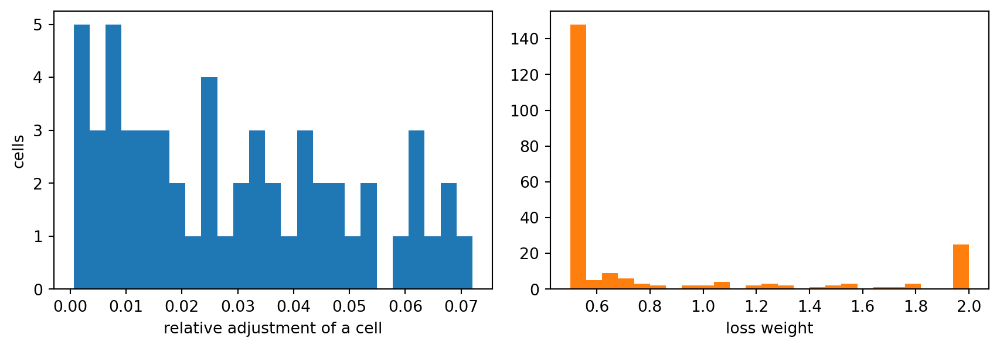
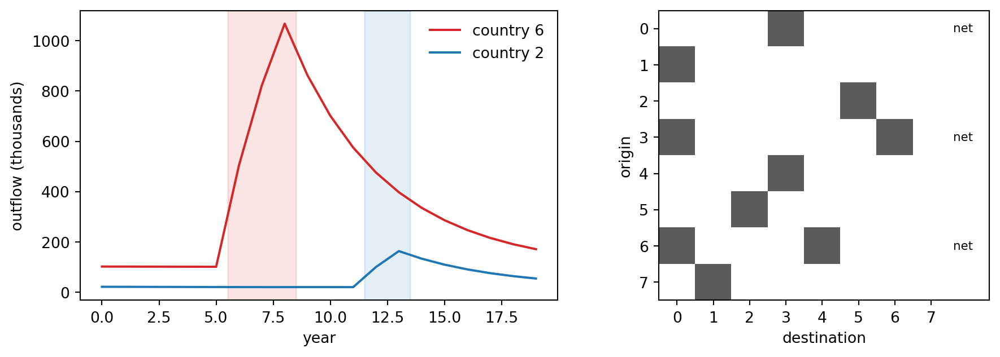
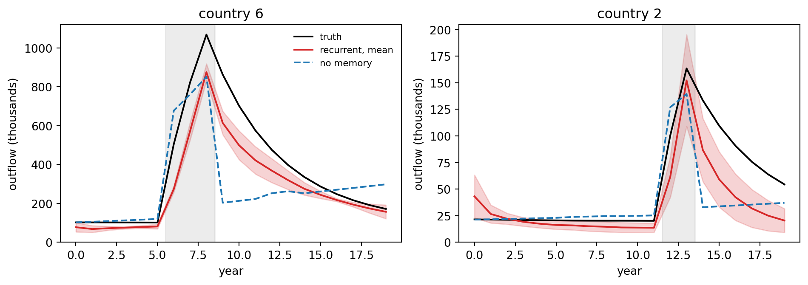
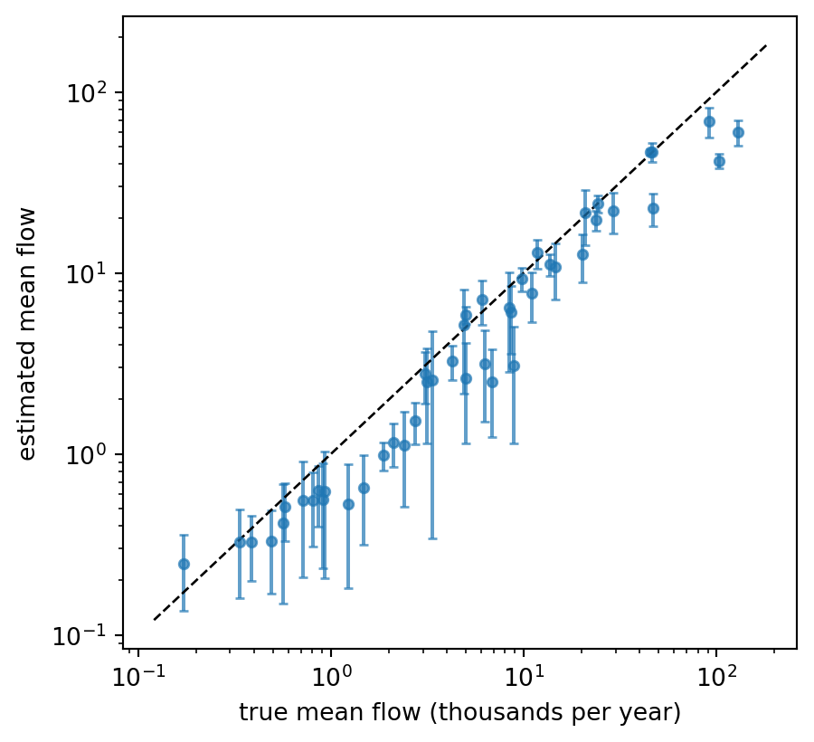

How Gaskin and Abel (2026) estimate bilateral flows nobody measured, by embedding an accounting identity in a recurrent network, and a small replication on a synthetic world
Nobody counts how many people move from one country to another. Some countries register arrivals and departures, most do not, and the ones that do use different definitions of a “move”. Border crossings count tourists. Population registers count only people who bother to deregister. Censuses count how many foreign-born people live in a country on one day every five or ten years, which says almost nothing about how many arrived and left in between. Yet researchers, governments, and humanitarian agencies need annual, bilateral, country-of-birth-resolved flows, because that is the quantity that responds to wars, recessions, and visa rules.
In 2026, Thomas Gaskin and Guy Abel published an answer in Nature (Gaskin and Abel, 2026): a dataset of origin-destination migration flows and stocks between 230 countries and regions, disaggregated by country of birth, from 1990 onward, with uncertainty bounds, produced by a deep recurrent neural network. This chapter is about how the problem was set up, because the setup is the transferable lesson. The authors did not find a labelled dataset of true flows and fit a regression to it, because no such dataset exists. They wrote down the one fact that is certain (people are conserved: a stock changes only through births, deaths, and moves), built that accounting identity into the training loop of a neural network, and asked the network to find the unobserved flow tensor that makes every partial, noisy, mutually inconsistent observation come out approximately right. The method belongs to the family called scientific machine learning or differentiable physics (Raissi, Perdikaris, and Karniadakis, 2019; Rackauckas et al., 2020), applied to a social system instead of a physical one.
The thesis of this chapter in one paragraph
When the quantity you need is never observed directly, but several aggregates of it are observed by different noisy instruments, do not discard the instruments that disagree. Write the exact relation between the hidden quantity and each aggregate, put those relations inside a differentiable model, and train the model on the aggregates. Add three ingredients that make this work in practice: a recurrent latent state so that today’s flows can depend on the whole past (Section 20.3), a variable transform and an uncertainty weighting so that no single huge value or unreliable source dominates the loss (Section 20.4 and Section 20.5), and an ensemble so that the answer comes with an honest spread (Section 20.12). The chapter derives each piece, implements it in a tested tri-language library, and replicates the idea on a synthetic world of eight countries where the truth is known, so that we can measure what the method recovers and where it fails.
The structure is as follows. We first state what the paper observed and what it estimated (Section 20.1), derive the accounting identity and count unknowns against observations (Section 20.2), describe the recurrent network and why memory matters (Section 20.3), then the scaling, loss, and demographic balancing (Section 20.4, Section 20.5, Section 20.6). A synthetic world follows (Section 20.7), with training and an honest recovery check (Section 20.8 and Section 20.9). We then cover elasticities, initial-stock calibration, and uncertainty (Section 20.10, Section 20.11, Section 20.12), what to change to rerun on the real data (Section 20.13), and the reference implementation in Python, Julia, and Rust (Section 20.15).
What the paper did, and what this chapter does
Everything labelled “paper” below is from Gaskin and Abel (2026), as described in the arXiv version of the manuscript (arXiv:2506.22821). Everything labelled “toy” is this chapter’s own small experiment on simulated data. The toy shares the paper’s structure but is orders of magnitude smaller (eight countries, a few thousand parameters, five ensemble members), runs on a laptop in a few minutes, and was never meant to reproduce the paper’s numbers. Table 20.1 lists the differences once, and the results section repeats the caveat where it matters.
20.1 The Problem: Four Instruments, None of Them the Quantity
Index countries by \(i\) (country of birth), \(j\) (country of origin of a move, meaning where the person lived before moving), and \(k\) (destination). The object of interest is the flow tensor\(T_{ijk}(t)\), the number of people born in \(i\) who moved from \(j\) to \(k\) in year \(t\). Setting \(i = j\) gives moves by natives of \(j\) leaving home; \(i = k\) gives people returning to their country of birth; \(i\) distinct from both gives onward migration, such as a person born in Syria moving from Turkey to Germany. The aggregates the world actually publishes are sums of this tensor:
Migrant stocks\(S_{ij}(t)\): the number of people born in \(i\) living in \(j\) at time \(t\). The UN Department of Economic and Social Affairs publishes these every five years, with revisions that do not agree across editions.
Total flows\(F_{jk}(t) = \sum_i T_{ijk}(t)\) for a few corridors: harmonised intra-European estimates (the paper uses the Quantmig database, which comes with uncertainty), national statistics from a few countries, and Facebook-derived estimates for 2019 to 2022.
Net migration\(\mu_j(t)\) for about 30 countries from national statistical offices. The UN’s own net migration series is computed as a demographic residual (population change minus births plus deaths), so the paper does not train on it, and instead uses it as a comparison.
Each instrument measures a different slice with a different definition, and the paper’s first figure shows that even for a single corridor the sending country’s deregistrations and the receiving country’s registrations differ by large factors. The estimation problem is therefore not “denoise one dataset”. It is reconcile several datasets that were never meant to agree, through a latent object that explains all of them.
Table 20.1: Differences between the published method and the replication in this chapter.
Aspect
Paper (Gaskin and Abel, 2026)
Toy in this chapter
Countries
230 countries and regions
8 synthetic countries
Years
1990 onward, annual
20 years, annual
Unknown tensor entries per year
about \(230^3 \approx 1.2 \times 10^7\)
\(8 \times 8 \times 7 = 448\)
Stock data
UN DESA, five-yearly, off-diagonal
Simulated, five-yearly, log-normal noise plus census coverage error
Flow data
Quantmig, Sweden, New Zealand, Finland, Facebook
10 simulated corridors, noisy and with stated standard errors
Net migration data
about 30 countries
3 countries, one with a systematic undercount
Covariates
18, from demography, economy, geography, culture, conflict
10, from a gravity-style generator
Network
recurrent, 7 layers of 60 tanh units, CELU output, latent dimension 100
recurrent, 3 layers of 32 tanh units, CELU output, latent dimension 8
Ensemble
15 networks, 100 initial-stock draws each, 1500 samples
5 networks, 10 draws each, 50 samples
Validation
held-out flows, comparison with standard methods, real data
recovery of known synthetic truth
20.2 The Accounting Identity and the Counting Problem
The one thing we know for certain is that people are conserved. Let \(B_j(t)\) be births in country \(j\) and \(\mu_j^{\text{d}}(t)\) the mortality rate there (written \(m_j\) below to keep \(\mu\) free for net migration). The stock of people born in \(i\) living in \(j\) evolves as
where \(\delta_{ij}\) is the Kronecker delta. The three terms say, in order: every birth in \(j\) adds to the native-born stock \(S_{jj}\); deaths remove a fraction of every stock; and the third term sums arrivals of \(i\)-born people into \(j\) from every other country \(k\) minus departures from \(j\) to every \(k\). Aggregating the tensor gives the quantities that are actually observed,
In discrete annual form, which is what the code integrates, \(S_{ij}(t+1) = S_{ij}(t) + \delta_{ij} B_j - m_j S_{ij}(t) + \sum_k (T_{ikj} - T_{ijk})\). The function stock_step implements exactly this, od_flows computes \(F\), and net_migration computes \(\mu\).
Conservation. Summing Equation 20.1 over all \(i\) and \(j\), the migration term telescopes: each flow \(T_{ijk}\) appears once with a plus sign (arrival in \(k\)) and once with a minus sign (departure from \(j\)), so
and likewise \(\sum_j \mu_j = 0\). Migration moves people between cells but never creates or destroys them. This is not a modelling assumption that data could contradict. It is an identity, and it is what makes training possible: any flow tensor the network proposes automatically implies a full set of stocks, a full set of net migration figures, and a full set of corridor flows that are consistent with one another, even though the observed versions of those quantities are not.
The next cell checks the identity on the synthetic world built later in the chapter, and counts unknowns against observations. The counting is the heart of why the problem is hard.
Code
import timeimport numpy as npimport matplotlib.pyplot as pltfrom aiinaction import ch_migration_flows as mfworld = mf.make_world(seed=0) # ground truth: covariates, flow tensor, stockstruth = mf.simulate_truth(world) # aggregates F[t, j, k] and net migration[t, j]obs = mf.observe(world, seed=1) # what an analyst would seen, years = world.n, world.years# The accounting identity reproduces the stored stocks, year by year.worst =0.0for t inrange(years): births = world.birth_rate * world.stocks[t].sum(axis=0) nxt = mf.stock_step(world.stocks[t], births, world.mortality, world.flows[t]) worst =max(worst, float(np.abs(nxt - world.stocks[t +1]).max()))print(f"largest stock mismatch over {years} annual steps: {worst:.2e}")# Conservation: migration moves people but never creates them.t =7f_t = mf.od_flows(world.flows[t])print(f"sum of net migration over countries at t={t}: {mf.net_migration(f_t).sum():.2e}")tot_change = world.stocks[t +1].sum() - world.stocks[t].sum()births = world.birth_rate * world.stocks[t].sum(axis=0)deaths =float((world.mortality[None, :] * world.stocks[t]).sum())print(f"population change {tot_change:,.1f} equals births minus deaths {births.sum() - deaths:,.1f}")# Counting unknowns against observations.unknowns = years * n * n * (n -1)n_stock = (len(obs.stock_years) -1) * n * (n -1)n_net = obs.net.sizen_flow = obs.flows.sizeprint(f"\nunknown tensor entries T[i,j,k,t]: {unknowns:,}")print(f"observations: stock differences {n_stock}, net migration {n_net}, flows {n_flow}, "f"total {n_stock + n_net + n_flow}")print(f"observations per unknown: {(n_stock + n_net + n_flow) / unknowns:.3f}")print(f"paper scale, 230 countries, one year: {230*230*229:,} unknown entries")
largest stock mismatch over 20 annual steps: 0.00e+00
sum of net migration over countries at t=7: 5.68e-14
population change 198.8 equals births minus deaths 198.8
unknown tensor entries T[i,j,k,t]: 8,960
observations: stock differences 224, net migration 60, flows 200, total 484
observations per unknown: 0.054
paper scale, 230 countries, one year: 12,114,100 unknown entries
The toy has 484 observations for 8,960 unknowns, about 0.05 per unknown, and the paper’s problem is far more underdetermined, because the number of unknowns grows as the cube of the number of countries while observations grow roughly with the square. The system of equations has many solutions. What selects among them is the other ingredient: the network ties the flows of different edges and different years together through shared parameters and shared covariates, so that the answer must be a smooth function of covariates rather than an arbitrary table. The accounting identity supplies the constraints; the network supplies the inductive bias. Gaskin and Abel are explicit that the problem is ill-posed in this sense and use an ensemble precisely to measure how much the answer depends on which of the many fitting solutions the optimiser lands on.
Classical methods choose different inductive biases. Stock differencing sets the flow from \(i\) to \(j\) to the positive part of \(S_{ij}(t + 5) - S_{ij}(t)\) divided by five (Abel, 2013). It assumes people move only between their birth country and a destination, ignores births and deaths, drops negative changes, and can only produce five-year averages. Demographic accounting methods estimate a three-dimensional flow table subject to the stock differences (Abel, 2013; Azose and Raftery, 2019; Abel and Cohen, 2019), but treat stocks as exact and use no covariates, so they cannot produce annual flows or explain them. Gravity models regress flows on covariates and can in principle give annual flows, but the paper argues they treat people as Markovian, reacting only to this year’s covariates, which is hard to defend for long-run economic and political conditions. The recurrent network is the paper’s attempt to keep the covariates of the gravity approach and the exactness of the accounting approach while adding memory.
20.3 The Recurrent Network: Flows With Memory
The paper’s mapping takes the covariates of the three countries involved, \(\boldsymbol{\phi}_{ijk}(t)\), together with a hidden state \(\mathbf{z}_{ijk}(t) \in \mathbb{R}^{Z}\), and returns a log flow estimate and the next hidden state:
The latent state starts at zero and “is a memory of past changes and their effects on the present flow estimate”. This is a recurrent neural network in the sense of Hochreiter and Schmidhuber (1997), except that the recurrence runs over years and the same network is applied independently to every edge \((i, j, k)\). The covariates include the migrant stocks \(S_{ij}\) and \(S_{ik}\), which are not observed every year. In intermediate years the stocks fed to the network come from the network’s own earlier predictions, via the accounting identity. That is the recursion: output at year \(t\) determines stocks at \(t + 1\), which are inputs at \(t + 1\).
flowchart LR
A["Covariates for year t"] --> N["Network u"]
S["Stocks S at t"] --> N
Z["Latent state z at t"] --> N
N --> T["Flow estimate T at t"]
N --> Z2["Latent state z at t plus 1"]
T --> ID["Accounting identity"]
S --> ID
ID --> S2["Stocks S at t plus 1"]
T --> AGG["Totals F and net migration"]
S2 --> L["Loss against observations"]
AGG --> L
Figure 20.1: One year of the recursive training procedure. The network maps covariates, current stocks, and a latent state to a flow estimate and a new latent state. The accounting identity turns flows into next year’s stocks, which feed back as inputs, while aggregates of the flows are compared with observations to form the loss.
Why bother with memory? The paper’s argument is that the decision to leave is “not merely predicated on the current economic climate: crises from past years can influence a person’s decision”. There are mechanical reasons too: diaspora networks, remittances, and visa regimes all carry the past forward. A feedforward network that maps this year’s covariates to this year’s flows has no way to represent a shock that raised flows two years ago and is still decaying. The toy builds this effect into the ground truth on purpose, so that we can test whether the latent state captures it (Section 20.9).
Two details matter for implementation. First, the output is \(\log \hat T\), so \(\hat T = \exp(\cdot) > 0\) and the model cannot propose negative flows; the paper finishes the network with a CELU activation (Barron, 2017), which is linear for positive inputs and saturates smoothly below, giving a floor on \(\log T\). Second, training runs through the whole simulated history, so gradients flow backward through every year of the recursion (backpropagation through time), and the full loss is computed on aggregates over all edges. In the toy the whole 20-year rollout for all 448 edges is one forward pass, so this is cheap. At the paper’s scale it is the reason training is a serious computational project.
The code below shows the model the chapter’s library trains: an MLP with tanh hidden layers and a CELU output, applied to every edge, with the latent block of the output fed back as input. The network is deliberately small. Nothing in the method depends on size, and a small network makes the replication fast and the failure modes visible.
20.4 Scaling the Data: the Symmetrised Yeo-Johnson Transform
Flows and stocks are heavy tailed: a few corridors carry millions of people and most carry hundreds. A squared-error loss on raw counts would be dominated by the largest corridors and learn nothing about the rest, and net migration has both signs, which rules out a plain logarithm. The paper uses a symmetrised version of the Yeo-Johnson power transform (Yeo and Johnson, 2000):
At \(\lambda = 1\) the transform is the identity, as can be checked by substitution; for \(\lambda < 1\) it compresses large magnitudes; at \(\lambda = 0\) it is a signed logarithm. Because the transform is strictly increasing and odd it is invertible, with
The inverse exists only where \(1 + \lambda |y| > 0\), so for negative \(\lambda\) some values of \(y\) have no preimage, and the library raises an error instead of returning nonsense. The derivative is needed later for elasticities. To pick \(\lambda\), one can maximise a Gaussian profile likelihood of the transformed sample, including the Jacobian of the transform:
The paper uses such a maximum likelihood choice to normalise the input covariates and fixes the scaling of the targets at \(\lambda = 0.7\), chosen by a sweep on synthetic data, then standardises the transformed values to zero mean and unit variance. The cell below shows the transform on a skewed sample and verifies the round trip.
Figure 20.2: The symmetrised Yeo-Johnson transform. Left: the transform for several values of lambda (lambda = 1 is the identity, lambda = 0 is a signed log). Right: a heavy-tailed sample of flow sizes before and after the transform with the maximum likelihood lambda; the transform turns a distribution whose mass sits in a tiny corner of the axis into one the loss function can see.
maximum likelihood lambda: -0.04
round trip error: 2.91e-11
skewness before 7.44, after -0.00
20.5 The Loss: Match Aggregates, Weight by Trust
With the flow tensor produced by the network, the model can compute stocks, net migration, and total flows, and compare each with its observation. The paper’s loss has the structure of a weighted \(L^2\) loss over all target values,
where angle brackets denote an average over all targets of that type and each \(\varphi_m\) is the transform of Equation 20.5 with standardisation. Two design choices deserve emphasis.
Stock differences, not stocks. The first term compares differences in stock over each five-year interval, not the stocks. Matching stocks directly would force the model’s trajectory to start from a possibly erroneous initial stock and to inherit every census error as a level shift. Differences measure what the flows actually did. The initial level is then recovered after training by a separate least squares step (Section 20.11).
Uncertainty weights. Each target gets a weight built from its relative uncertainty: the inverse of the relative uncertainty, normalised so that the weights have mean one, and clamped to \([0.5, 2]\):
Smaller uncertainty gives a larger weight, and the clamp stops one very precise point from dominating and one very noisy point from vanishing. In the paper the Quantmig flows, which come with standard errors, set the weights of the flow targets; other flow targets receive the average Quantmig weight or one; stock weights come from the balancing step below; and net migration targets have weight one. The library implements Equation 20.9 in uncertainty_weights and the loss structure in weighted_l2. Normalising then clamping once can leave the mean slightly different from one; the paper does not spell out whether it renormalises, and the toy does not either.
20.6 Demographic Balancing With Iterative Proportional Fitting
The stock tables themselves are inconsistent: two editions of the same census table do not satisfy the demographic accounting between them. The paper therefore cleans the tables, and uses the amount of cleaning as the uncertainty of each cell. Given stock tables \(S(t_1)\) and \(S(t_2)\), the scheme the paper cites adds the births of the interval to the first table and the deaths to the second, forces both to share the midpoint of their row and column totals, and subtracts births and deaths again. Forcing a table to given margins is done by iterative proportional fitting (IPF; Deming and Stephan, 1940). Alternately rescale each row to its target total and each column to its target total:
When the targets have equal totals and the table has a pattern of zeros that permits a solution, the iteration converges to the table with the required margins that is closest to the original in a Kullback-Leibler sense. The code below runs the balancing on the simulated stock tables, which carry log-normal cell noise and a country-level census coverage error, and converts the size of each adjustment into loss weights. The paper’s exact implementation lives in its repository; the function here follows the description in the text and should be read as a faithful reconstruction of the idea, not as a line-by-line copy.
Code
off =~np.eye(n, dtype=bool)rel = obs.stock_rel_unc[:, off].ravel()w_stock = mf.uncertainty_weights(rel)true_rel = np.abs(obs.stocks[:, off] / world.stocks[obs.stock_years][:, off] -1.0)bal_rel = np.abs(obs.stocks_bal[:, off] / world.stocks[obs.stock_years][:, off] -1.0)fig, ax = plt.subplots(1, 2, figsize=(9, 3.2))ax[0].hist(obs.stock_rel_unc[0][off], bins=25, color="tab:blue")ax[0].set_xlabel("relative adjustment of a cell"); ax[0].set_ylabel("cells")ax[1].hist(w_stock, bins=25, color="tab:orange"); ax[1].set_xlabel("loss weight")plt.tight_layout(); plt.show()print(f"mean relative error of raw stock cells against the truth: {true_rel.mean():.3f}")print(f"mean relative error of balanced stock cells against the truth: {bal_rel.mean():.3f}")print(f"weights at the lower clamp: {np.mean(w_stock <=0.5+1e-9):.0%}, upper clamp: {np.mean(w_stock >=2-1e-9):.0%}")

Figure 20.3: Demographic balancing of the simulated stock tables. Left: relative adjustment made to each off-diagonal cell by iterative proportional fitting, for the first five-year interval. Right: the loss weights that result from converting those adjustments to uncertainties; the clamp at 0.5 and 2 is visible as spikes.
mean relative error of raw stock cells against the truth: 0.042
mean relative error of balanced stock cells against the truth: 0.058
weights at the lower clamp: 62%, upper clamp: 10%
The printed comparison is a useful reality check, and in this toy it is not flattering. Against the known truth the balanced cells (mean relative error 0.058) are not closer than the raw cells (0.042). The reason is structural: the margins that IPF enforces include the native stock, which the generator fills in as population minus the noisy migrant cells, so the margins carry the same noise as the cells and the fit enforces mutual consistency, not accuracy. Balancing is therefore best read as a measure of how much the tables disagree with demographic accounting, which is exactly how the paper uses it (the size of the adjustment becomes the cell’s uncertainty), and not as a denoiser. The heavy tail of that disagreement also means most weights sit on a clamp (62% at the lower bound), so the clamp range is doing a lot of the work. On the real data nobody can compare against the truth, which is why the paper validates the final flows instead (Section 20.13).
20.7 A Synthetic World With Known Truth
To test whether this machinery recovers anything, we need a world where the truth is known. The generator in make_world builds eight countries and twenty years with these ingredients:
Covariates: population, GDP per capita (growing at country-specific rates), pairwise distance, a shared-language indicator, and a conflict indicator.
Gravity-style departures. The per-capita rate at which residents of \(j\) move to \(k\) is \(m_{jk} = \exp\{\beta_0 + \beta_g (\log g_k - \log g_j) + \beta_d \log d_{jk} + \beta_l\, \ell_{jk} + \beta_p \log P_k\}\), with \(g\) GDP per capita, \(d\) distance, \(\ell\) common language, \(P\) population, and true coefficients \(\beta_g = 0.8\), \(\beta_d = -0.7\), \(\beta_l = 0.8\), \(\beta_p = 0.5\).
A return effect. People return to their country of birth three times as often as the gravity rate alone implies, so the tensor genuinely depends on birth country, and a model for \(F_{jk}\) alone could not generate it.
Memory. Two countries suffer conflicts of three years (country 6 in years 6 to 8, country 2 in years 12 and 13). The outflow rate is multiplied by \(1 + 4 s_j(t)\), where \(s_j(t) = 0.8\, s_j(t-1) + c_j(t)\) is an exponentially decaying trace of the conflict indicator \(c_j\). The covariate only shows the three conflict years; the flows stay elevated for years afterwards.
Accounting. Flows are \(T_{ijk} = S_{ij}\, m_{jk}\, (1 + 3\,\delta_{ik})\) and stocks evolve by the identity of Equation 20.1 with births and deaths.
Then observe degrades the truth the way the real data are degraded. Stock tables appear every fifth year, off-diagonal only, with log-normal cell noise (5 percent) and a per-table census coverage error for each country of residence (so tables disagree with the accounting identity). Net migration is visible for three countries, and the registry of the second of them counts only 85 percent of true movements. Annual flows are visible for ten corridors, each with its own noise level that is reported as a standard error and used for the weights. Everything else, including the whole birth-country dimension and every other corridor, is hidden.
Code
fig, ax = plt.subplots(1, 2, figsize=(10, 3.4))tF = world.flows.sum(axis=1)for c, color in ((6, "tab:red"), (2, "tab:blue")): ax[0].plot(tF[:, c, :].sum(axis=1), color=color, label=f"country {c}") yrs = np.where(world.conflict[:, c] >0)[0] ax[0].axvspan(yrs.min() -0.5, yrs.max() +0.5, color=color, alpha=0.12)ax[0].set_xlabel("year"); ax[0].set_ylabel("outflow (thousands)"); ax[0].legend(frameon=False)seen = np.zeros((n, n))for o, d in obs.flow_corridors: seen[o, d] =1ax[1].imshow(seen, cmap="Greys", vmin=0, vmax=1.4)for c in obs.net_countries: ax[1].text(n -0.4, c, "net", ha="left", va="center", fontsize=8)ax[1].set_xlim(-0.5, n +0.6)ax[1].set_xlabel("destination"); ax[1].set_ylabel("origin")ax[1].set_xticks(range(n)); ax[1].set_yticks(range(n))plt.tight_layout(); plt.show()print(f"countries {n}, years {years}, migrant share of residents at t=0: "f"{1- np.trace(world.stocks[0]) / world.stocks[0].sum():.1%}")print(f"corridors with annual flow data: {len(obs.flow_corridors)} of {n * (n -1)} "f"({len(obs.flow_corridors) / (n * (n -1)):.0%})")print(f"countries with net migration data: {obs.net_countries.tolist()}")print(f"peak outflow multiple for country 6: {tF[:, 6, :].sum(1).max() / tF[:6, 6, :].sum(1).mean():.1f}x")

Figure 20.4: The synthetic world. Left: total outflow of the two countries that suffer conflicts. The conflict covariate (shaded) lasts three years; the flows stay elevated for years afterwards, the memory the latent state must learn. Right: which corridors have annual flow observations (dark), and which origin countries have net migration data (marked with the word net).
countries 8, years 20, migrant share of residents at t=0: 10.4%
corridors with annual flow data: 10 of 56 (18%)
countries with net migration data: [0, 3, 6]
peak outflow multiple for country 6: 10.5x
20.8 Training the Ensemble
The library function train_ensemble assembles the pieces. For each ensemble member it initialises a network with its own random seed and runs the full 20-year rollout from the balanced initial stock table, feeding stocks and latent states back at every step. It forms the three loss terms of Equation 20.8 (stock differences, net migration, corridor flows), each transformed with \(\lambda = 0.7\) and standardised, with uncertainty weights on stocks and flows, and updates the parameters with AdamW and a cosine learning rate schedule. After training, it re-integrates every network from perturbed initial stocks to push the initial-stock uncertainty through (Section 20.12). We train two ensembles on the same data: the recurrent model, and an ablation whose latent state is zeroed every year, which is the toy’s version of the Markovian gravity assumption. The torch implementation is Python only; the numeric pieces it calls are ported to Julia and Rust (Section 20.15).
Code
t0 = time.time()fit_mem = mf.train_ensemble(world, obs, mf.TrainConfig(use_memory=True))t_mem = time.time() - t0t0 = time.time()fit_ff = mf.train_ensemble(world, obs, mf.TrainConfig(use_memory=False))t_ff = time.time() - t0for name, fit, secs in (("recurrent (memory)", fit_mem, t_mem), ("no memory ablation", fit_ff, t_ff)): fl = np.array(fit["final_loss"])print(f"{name:20s} final loss per member: {np.round(fl, 3)} mean {fl.mean():.3f} ({secs:.0f} s)")print("flow samples (members x draws, years, i, j, k):", fit_mem["samples"].shape)
recurrent (memory) final loss per member: [0.377 0.432 0.41 0.496 0.461] mean 0.435 (83 s)
no memory ablation final loss per member: [0.735 0.752 0.733 0.747 0.757] mean 0.745 (73 s)
flow samples (members x draws, years, i, j, k): (50, 20, 8, 8, 8)
The final training loss is already informative. The recurrent ensemble reaches a mean loss of 0.44, while the ablation without memory is stuck near 0.74. Both see the same data and have almost the same number of parameters (the memoryless model simply ignores its latent inputs), so the difference is evidence that the data contain temporal structure that a memoryless mapping from covariates cannot reproduce. A training loss is not a recovery result, though, and the point of a synthetic world is that we can do better.
20.9 Recovery Against the Truth
We now compare the ensemble mean of the total flow \(F_{jk}(t)\) with the ground truth, separately on the ten corridors whose flows were observed (a test of fitting) and the 46 corridors that were not (a test of whether the covariates plus accounting identity fix the flows where there is no direct data). The metrics are: the root mean squared error on the log scale (a value of 0.3 means typical multiplicative error of about 35 percent), the Pearson correlation of log flows, the median relative error, and the share of truths inside a two-sigma ensemble band.
Code
import pandas as pdrows = []for name, fit in (("recurrent (memory)", fit_mem), ("no memory", fit_ff)): rep = mf.recovery_report(world, fit["samples"], obs)for part, d in rep.items(): rows.append({"model": name, "corridors": part, "log RMSE": d["log_rmse"],"Pearson (log)": d["pearson_log"], "median rel. error": d["median_rel_err"],"95% coverage": d["coverage_95"]})recovery = pd.DataFrame(rows)recovery.round(3)
Table 20.2: Recovery of the ground-truth total flows F[t, j, k] on observed and unobserved corridors, ensemble mean against truth, all years pooled. Log RMSE is the root mean squared error of log flows; coverage is the share of truths inside mean plus or minus 1.96 ensemble standard deviations.
model
corridors
log RMSE
Pearson (log)
median rel. error
95% coverage
0
recurrent (memory)
observed corridors
0.332
0.978
0.118
0.655
1
recurrent (memory)
unobserved corridors
0.608
0.958
0.322
0.454
2
no memory
observed corridors
0.305
0.977
0.173
0.530
3
no memory
unobserved corridors
0.476
0.961
0.266
0.490
Code
# Classical stock differencing on the raw tables, evaluated on 5-year average flows.tF = world.flows.sum(axis=1) # (years, n, n) true total flowsest_mem = fit_mem["samples"].sum(axis=2).mean(axis=0)est_ff = fit_ff["samples"].sum(axis=2).mean(axis=0)err_base, err_mem, err_ff, zero_share = [], [], [], []for q inrange(len(obs.stock_years) -1): a, b = obs.stock_years[q], obs.stock_years[q +1] base = mf.stock_difference_baseline(obs.stocks[q], obs.stocks[q +1], b - a) tru = tF[a:b].mean(axis=0) pos = off & (base >0) zero_share.append(1- pos.sum() / off.sum()) err_base.append(np.log(base[pos]) - np.log(tru[pos])) err_mem.append(np.log(est_mem[a:b].mean(axis=0)[pos]) - np.log(tru[pos])) err_ff.append(np.log(est_ff[a:b].mean(axis=0)[pos]) - np.log(tru[pos]))rm =lambda e: float(np.sqrt(np.mean(np.concatenate(e) **2)))print(f"stock differencing returns exactly zero for {np.mean(zero_share):.0%} of corridor-intervals")print("log RMSE on the corridor-intervals where it returns a positive value:")print(f" stock differencing {rm(err_base):.2f}")print(f" recurrent ensemble {rm(err_mem):.2f}")print(f" no-memory ensemble {rm(err_ff):.2f}")
stock differencing returns exactly zero for 33% of corridor-intervals
log RMSE on the corridor-intervals where it returns a positive value:
stock differencing 1.46
recurrent ensemble 0.48
no-memory ensemble 0.40
The results need to be read carefully, because they show both what the method buys and what it does not. On the observed corridors the recurrent ensemble tracks the truth closely (0.33 log RMSE), which only shows that the network can fit data it was shown. On the unobserved corridors the log RMSE is 0.61 for the recurrent model and 0.48 for the memoryless ablation, so on this measure pooled over all years the memoryless model is better, and the correlation of log flows with the truth is high for both (0.96 and 0.96). So the covariates and the accounting identity do carry either model to the right ordering of corridors it never saw, but the level is off by tens of percent. Memory buys something specific, shown next, not a uniform improvement. The classical stock differencing baseline returns exactly zero for 33% of corridor-intervals and, where it is positive, has a log RMSE of 1.46, against 0.48 for the recurrent ensemble on the same cells. The comparison is not entirely fair to the baseline (it estimates flows by birth country, not total flows, and cannot produce annual values), and not entirely fair to the model (it benefits from the covariates), but it makes the paper’s point that raw stock differences are a weak flow estimator.
The memory effect shows up where it was designed to: in the time profile of a country that suffered a shock. The figure below plots the true outflow of the two conflict countries against the ensemble mean and band of both models.
Code
fig, ax = plt.subplots(1, 2, figsize=(10, 3.6), sharey=False)for a_, c inzip(ax, (6, 2)): tru = tF[:, c, :].sum(axis=1) sm = fit_mem["samples"].sum(axis=2)[:, :, c, :].sum(axis=-1) # (draws, years) sf = fit_ff["samples"].sum(axis=2)[:, :, c, :].sum(axis=-1) mu, sd = sm.mean(0), sm.std(0, ddof=1) a_.plot(tru, color="black", label="truth") a_.plot(mu, color="tab:red", label="recurrent, mean") a_.fill_between(range(years), mu -2* sd, mu +2* sd, color="tab:red", alpha=0.2) a_.plot(sf.mean(0), color="tab:blue", ls="--", label="no memory") yrs = np.where(world.conflict[:, c] >0)[0] a_.axvspan(yrs.min() -0.5, yrs.max() +0.5, color="gray", alpha=0.15) a_.set_title(f"country {c}"); a_.set_xlabel("year"); a_.set_ylabel("outflow (thousands)")ax[0].legend(frameon=False, fontsize=8)plt.tight_layout(); plt.show()post =slice(6, 19)for c in (6, 2): tru = tF[:, c, :].sum(axis=1) sm = fit_mem["samples"].sum(axis=2)[:, :, c, :].sum(axis=-1).mean(0) sf = fit_ff["samples"].sum(axis=2)[:, :, c, :].sum(axis=-1).mean(0)print(f"country {c}: log RMSE of total outflow, years 6 to 18: "f"recurrent {mf.log_rmse(tru[post], sm[post]):.2f} no memory {mf.log_rmse(tru[post], sf[post]):.2f}")

Figure 20.5: Outflows of the two countries with conflicts, truth against ensemble estimates. Country 6 has annual net migration data and country 2 has none. The recurrent model (solid, with a two standard deviation band) follows the decay after the conflict; the no-memory ablation (dashed) can react only while the conflict covariate is on.
country 6: log RMSE of total outflow, years 6 to 18: recurrent 0.29 no memory 0.65
country 2: log RMSE of total outflow, years 6 to 18: recurrent 0.54 no memory 0.65
The log RMSE of the shocked countries’ total outflow is the cleanest evidence about memory. Country 6 has annual net migration data, so the model can see the shock directly in its targets, and the recurrent model’s error is less than half the memoryless one’s. Country 2 has no annual data at all; the recurrent model still catches the peak and the beginning of the decay from shared parameters and the stock differences, but it decays too fast, and its advantage in log RMSE shrinks to a modest margin. The figure also shows what a memoryless model does after a shock: as soon as the conflict covariate switches off it falls straight back toward the baseline level, because nothing in its inputs says the shock ever happened.
The scatter of estimates against truth on the corridors that were never observed gives the overall picture.
Code
mask = off.copy()for o, d in obs.flow_corridors: mask[o, d] =FalseF_est = fit_mem["samples"].sum(axis=2) # (draws, years, n, n)m_t = tF.mean(axis=0)[mask]e_all = F_est.mean(axis=1)[:, mask] # time average per drawe_m, e_s = e_all.mean(0), e_all.std(0, ddof=1)fig, ax = plt.subplots(figsize=(4.8, 4.4))ax.errorbar(m_t, e_m, yerr=2* e_s, fmt="o", ms=4, alpha=0.7, capsize=2)lo, hi =min(m_t.min(), e_m.min()) *0.7, max(m_t.max(), e_m.max()) *1.4ax.plot([lo, hi], [lo, hi], "k--", lw=1)ax.set_xscale("log"); ax.set_yscale("log")ax.set_xlabel("true mean flow (thousands per year)"); ax.set_ylabel("estimated mean flow")plt.tight_layout(); plt.show()ratio = np.log(e_m / m_t)print(f"mean log ratio (estimate over truth): {ratio.mean():+.2f} (a bias of {np.exp(ratio.mean()) -1:+.0%})")print(f"corridors within a factor of 1.5 of the truth: {np.mean(np.abs(ratio) < np.log(1.5)):.0%}")print(f"corridors whose truth lies inside the 2 sigma ensemble band: {np.mean(np.abs(m_t - e_m) <=2* e_s):.0%}")

Figure 20.6: Ensemble estimate against truth for the 46 corridors with no flow observations (time-averaged total flow, log scales, one point per corridor). Error bars are two ensemble standard deviations. The diagonal is perfect recovery.
mean log ratio (estimate over truth): -0.34 (a bias of -29%)
corridors within a factor of 1.5 of the truth: 67%
corridors whose truth lies inside the 2 sigma ensemble band: 41%
Three honest conclusions follow from the toy.
Structure is recovered much better than level. The log correlation is high, but the mean log ratio of estimate to truth is -0.34, a bias of -29%, and the scatter plot shows the points mostly below the diagonal at all sizes, with the largest corridors underestimated by a factor of about two. This run does not isolate the cause. Candidates are that flows are small relative to the census noise in the stock differences, which are the only dense data, and that the network’s smooth fit to ten observed corridors extrapolates conservatively. More flow observations help: an early prototype of this chapter observed only six corridors and had a considerably larger bias.
The ensemble is overconfident about the truth. Only 41% of the unobserved corridors have the truth inside the two-sigma band. The ensemble spread measures disagreement among fitted solutions and the effect of initial-stock uncertainty. It cannot see a bias shared by all members, which comes from the data and the inductive bias. The paper has the same limitation in principle, and its answer is validation on held-out real flows. A reader should treat an ensemble band as a lower bound on uncertainty.
Memory helps where memory exists, and costs elsewhere. The recurrent model fits the training data far better and follows post-shock decay, but on the pooled unobserved corridors it is slightly worse than the memoryless model in this run. A latent state is extra capacity that can also fit noise; with ten observed corridors and five ensemble members the toy cannot tell the two effects apart.
20.10 Elasticities Through the Chain Rule
A flow estimate is useful, but a researcher also wants to know what drives it. Because the model is differentiable, the sensitivity of the log flow to any covariate is available by automatic differentiation. The paper defines the elasticity of the flow with respect to the \(i\)-th covariate as
with \(u = \log \hat T\). The network differentiates with respect to the transformed input \(\tilde x_i\), and the chain rule through Equation 20.6 converts that to a response to the raw covariate. Reading \(\varepsilon_i\): a one percent increase in the covariate changes the flow by about \(\varepsilon_i\) percent. The library function elasticity_chain does the conversion and feature_elasticity differentiates the trained networks with respect to GDP per capita of the origin and the destination. In the toy ground truth the answers are known: \(+\beta_g = +0.8\) for the destination and \(-0.8\) for the origin.
Table 20.3: Estimated elasticity of the flow with respect to GDP per capita (mean and standard deviation over ensemble members and years), against the ground truth of the gravity generator.
covariate
truth
recurrent: mean
recurrent: sd
no memory: mean
no memory: sd
0
GDP per capita, origin
-0.8
0.01
0.11
0.04
0.12
1
GDP per capita, destination
0.8
0.15
0.04
-0.00
0.05
This is a negative result worth keeping. With eight countries, GDP varies in the cross-section across only eight values and drifts slowly in time, so the data cannot separate the GDP effect from the other covariates. The recurrent ensemble’s origin elasticity is essentially zero (truth \(-0.8\)) and its destination elasticity has the right sign but about a fifth of the true size (truth \(+0.8\)); the memoryless ensemble is no better. The chain rule is implemented correctly (the unit tests check the conversion), but a derivative of a flexible network is only as good as the identification the data provide. The paper’s setting, with 230 countries, 34 years, and 18 covariates, gives the network far more variation to separate the effects, and Gaskin and Abel use the elasticities for interpretation only after the network has been validated on held-out data. The lesson for readers building such models is to test elasticity recovery on a synthetic truth before interpreting elasticities on real data.
20.11 Calibrating the Initial Stock
Because the loss matches stock differences, the trained model fixes only changes in stocks, not their level. To produce a stock time series\(\hat S_{ij}(t)\) one needs an initial condition, and the paper computes the best constant offset after training instead of trusting a noisy first census. Let \(\tilde s_j(t) = \prod_{t_0 \le \tau < t} (1 - m_j(\tau))\) be the survival fraction of the initial cohort in country \(j\). Shifting the initial stock by \(b_{ij}\) shifts the modelled stock at \(t\) by \(\tilde s_j(t)\, b_{ij}\), so the weighted least squares problem has a closed form:
with \(b_{ij}\) raised, if necessary, to the smallest value that keeps every shifted stock non-negative. The function calibrate_offset implements Equation 20.12 including the constraint, and survival_fraction builds \(\tilde s_j\). The cell below integrates the ensemble mean flows from the observed initial table, fits the offsets, and measures the stock error against the true stocks before and after.
Code
mean_flows = fit_mem["samples"].mean(axis=0) # (years, i, j, k)s_hat = [np.maximum(fit_mem["stock0"], 0.0)]for t inrange(years): births = world.birth_rate * s_hat[-1].sum(axis=0) s_hat.append(mf.stock_step(s_hat[-1], births, world.mortality, mean_flows[t]))s_hat = np.array(s_hat) # (years + 1, n, n)st = obs.stock_yearsshifted = s_hat.copy()for j inrange(n): surv = mf.survival_fraction(np.repeat(world.mortality[j], years)) # (years + 1,)for i inrange(n):if i == j:continue b = mf.calibrate_offset(obs.stocks_bal[:, i, j], s_hat[st, i, j], np.ones(len(st)), surv[st]) shifted[:, i, j] = s_hat[:, i, j] + surv * btruth_s = world.stocksdef rmse(a, idx):returnfloat(np.sqrt(np.mean((a[idx][:, off] - truth_s[idx][:, off]) **2)))all_years = np.arange(years +1)rmse_raw =float(np.sqrt(np.mean((obs.stocks[:, off] - truth_s[st][:, off]) **2)))print("RMSE of migrant stocks against the truth (thousands)")print(f"{'':44s}{'all years':>12s}{'census years':>14s}")print(f"{'integrated from the observed first table':44s}{rmse(s_hat, all_years):12.1f}{rmse(s_hat, st):14.1f}")print(f"{'after the offset calibration':44s}{rmse(shifted, all_years):12.1f}{rmse(shifted, st):14.1f}")print(f"{'raw observed tables (census years only)':44s}{'':>12s}{rmse_raw:14.1f}")
RMSE of migrant stocks against the truth (thousands)
all years census years
integrated from the observed first table 63.1 63.8
after the offset calibration 51.7 52.9
raw observed tables (census years only) 31.3
The offset calibration reduces the stock error (from 63 to 52 thousand over all years), as it should, since it is the least squares fit to the observed tables. But at the census years the raw tables, which are the truth plus 5 percent noise, are closer to the truth (31 thousand) than the model’s calibrated series (53). That is the expected ordering: the model was trained on stock changes and flows, never on stock levels, so it is not a good stock reconstruction. What the model adds is the years between censuses, where the raw data have nothing at all, and the decomposition of changes into flows.
20.12 Uncertainty: an Ensemble Plus a Pushforward
Gaskin and Abel separate two sources of uncertainty. The first is ill-posedness: many parameter settings fit the data about equally well, but may imply different flows. They sample this by training an ensemble of networks from different random initialisations, which approximates a distribution over the parameters (Lakshminarayanan, Pritzel, and Blundell, 2017). The second is input uncertainty: the covariates themselves are noisy. Given a distribution \(\rho_0\) over the inputs, the distribution of the output is the pushforward of \(\rho_0\) through the trained map,
In the paper the only input uncertainty that is quantified is the initial stock (obtained from the demographic balancing), so each of the 15 trained networks is run on 100 samples of the initial stocks, giving \(15 \times 100 = 1500\) samples of the flow tensor, of which the published dataset reports the mean and one standard deviation. train_ensemble does the same at toy scale: 5 networks times 10 draws gives 50 samples, with each initial cell perturbed by a log-normal factor whose scale is the cell’s balancing uncertainty. The next cell separates the two sources in the toy, to see how much each contributes to the total spread.
Code
S_ = fit_mem["samples"].sum(axis=2) # (50, years, n, n)members, draws = fit_mem["cfg"].members, fit_mem["cfg"].pushforward_drawsgrouped = S_.reshape(members, draws, *S_.shape[1:])logF = np.log(np.maximum(grouped[:, :, :, off], 1e-9)) # log flows, per edgewithin = logF.var(axis=1, ddof=1).mean() # initial-stock pushforwardbetween = logF.mean(axis=1).var(axis=0, ddof=1).mean() # ensemble disagreementprint(f"variance of log flows from the initial-stock pushforward (within members): {within:.4f}")print(f"variance of log flows from ensemble disagreement (between members): {between:.4f}")
variance of log flows from the initial-stock pushforward (within members): 0.0003
variance of log flows from ensemble disagreement (between members): 0.0729
In the toy the initial-stock pushforward contributes almost nothing (0.0003 against 0.0729 for the disagreement between members), because the initial-stock uncertainties produced by the balancing are small and the flows depend on the stock only through a log-scale input feature. Almost all of the spread comes from the ensemble, that is, from the ill-posedness of the problem. That ordering need not carry over to the real data, where the initial stocks are far noisier, and it is a reason to keep both sources in the pipeline.
20.13 Rerunning on the Real Data
Nothing in this chapter downloads the real data, and the chapter’s cells never touch the network. The materials are public: the paper is at https://doi.org/10.1038/s41586-026-10611-7, the dataset (training data, network weights, and estimates) is on Zenodo at https://doi.org/10.5281/zenodo.15623215, and the training code is at https://github.com/ThGaskin/Migration_flows. To work from the real inputs, a reader should proceed as follows, and treat the repository’s own documentation, not this chapter, as the authority for file formats and commands.
Download from the Zenodo record the migration estimates and the training inputs. Check the record’s file listing and licence first, and record the checksum of what you download.
Reproduce a known number before trusting anything. The paper reports that global annual movements rose from about 13 million in 2000 to over 36 million in 2023, and that the largest single-year flow in its estimates is Venezuela to Colombia in 2019 at roughly 850,000 people. Aggregating the published flow table and matching these two figures is a cheap test that you have read the file correctly.
Run the accounting checks of this chapter on the real table. Using od_flows and net_migration on any year of the published tensor, the net migration over all countries must sum to zero, and stock_step applied to a year’s stocks, births, mortality rates, and flows must reproduce the next year’s stocks to rounding. A table that fails these tests has been read with the wrong axis order or units.
Compare with held-out sources. The paper validates against flows withheld from training. If you have a national series that was not used (the paper lists the net migration sources by country in its supplement), compare it with the net migration implied by the estimates, using the metrics of Section 20.9.
To retrain, follow the repository’s configuration. The settings given in the paper’s methods are: latent dimension 100, 7 layers of 60 tanh units with a CELU output, target scaling parameter \(\lambda = 0.7\), weights clamped to \([0.5, 2]\), 15 networks, and 100 initial-stock samples each. The toy of this chapter mirrors the structure with TrainConfig, whose fields have the same meaning at a much smaller scale.
The sketch below shows the shape of step 3 in code, with every file name and array layout deliberately left as a placeholder, because the actual layout must be read from the Zenodo record. It is not executed.
# Show-only sketch: file names and array layouts are PLACEHOLDERS, read the Zenodo record.import numpy as npfrom aiinaction.ch_migration_flows import od_flows, net_migration, stock_step# T has shape (n_birth, n_origin, n_dest) for one year, in people (not thousands).# T = np.load("<path to one year of the published flow tensor>")# F = od_flows(T) # total flows, origin by destination# print(abs(net_migration(F).sum())) # must be numerically zero# S_next = stock_step(S_t, births_t, mortality_t, T)# print(abs(S_next - S_t_plus_1).max() / S_t_plus_1.max()) # relative mismatch
20.14 Alternative Viewpoints and Limits
Identifiability is the central worry. Estimating \(T_{ijk}\) from aggregates is ill-posed, and the network’s smoothness and the covariates are doing real work. If the covariates say Syrians are unlikely to move from Turkey to Germany, the output will reflect that prior. The ensemble spread does not account for such prior-driven error, as the toy shows (Section 20.9). Independent validation data, not model fit, is the evidence.
The covariates are themselves estimates. GDP, trade, and refugee stock series have gaps that the paper fills by extrapolation. Errors in them propagate unmodelled, apart from the initial stocks.
The loss design embeds judgement. Net migration targets get weight one; the source priority order (Quantmig, then national statistics, then Facebook) decides which dataset wins in an overlap; and the clamp range is a hyperparameter. A different but defensible choice changes the answer for badly measured corridors.
Definitions of “a move” differ. The paper restricts to sources with a one-year definition, but even those are not identical. A neural network that matches several definitions at once learns a compromise, not a definition.
Simpler baselines deserve a fair trial. The paper compares with stock differencing and demographic accounting. A reader should also try a regularised gravity model plus the accounting identity, with a latent state added only if it wins, to know what the neural network is buying.
The same pattern applies elsewhere. Hidden-state estimation from several aggregates shows up wherever a flow is unobservable but conserved: epidemiology (infections from reported cases, hospitalisations, and deaths), supply chains (shipments from inventories and sales), and finance (flows from balance sheets). The ingredients are the same: write the identity, parameterise the unknown with a covariate-driven network, give it a memory, weight sources by trust, and report an ensemble.
20.15 Reference Implementation
The numeric core of aiinaction.ch_migration_flows is implemented in all three of the book’s languages with identical names and semantics, and the three test suites assert the same fixtures. These cover the Yeo-Johnson transform and its inverse, derivative, and profile likelihood; the stock step, total flows, and net migration; iterative proportional fitting and demographic balancing; uncertainty weights and the weighted loss; survival fractions and the offset calibration (including the non-negativity constraint); stock differencing; the gravity rate; and the recovery metrics. The synthetic world generator, observation noise, torch recurrent model, and ensemble training are Python only, because they depend on random number generators and an autodiff framework whose streams would not match across languages.
useaiinaction::ch_migration_flows::{ calibrate_offset, ipf, net_migration, od_flows, stock_step, survival_fraction, uncertainty_weights, yj_sym,};fn main() ->Result<(),String>{let x = [-5.0,-0.3,0.0,2.0,10.0];let y:Vec<f64>= x.iter().map(|&v| yj_sym(v,0.7).unwrap()).collect();println!("yj_sym lambda 0.7: {:?}", y);// Matrices are flat row-major; the tensor is flat (i * n + j) * n + k.let s = [100.0,5.0,2.0,3.0,80.0,4.0,1.0,6.0,60.0];letmut t =vec![0.0;27];for i in0..3{for j in0..3{for k in0..3{if j != k { t[(i *3+ j) *3+ k] =0.1* (i asf64+1.0) * (j asf64+2.0) * (k asf64+1.0);}}}}let next = stock_step(&s,3,&[1.5,1.0,0.8],&[0.01,0.02,0.015],&t)?;println!("stock step: {:?}", next);println!("net migration: {:?}", net_migration(&od_flows(&t,3)?,3)?);let table = [10.0,20.0,30.0,15.0,25.0,5.0,8.0,2.0,40.0];let (_fit, iters) = ipf(&table,&[60.0,50.0,50.0],&[45.0,55.0,60.0],1e-10,10_000)?;println!("ipf converged in {iters} iterations");println!("weights: {:?}", uncertainty_weights(&[0.05,0.1,0.2,0.4,0.8,1.6],0.5,2.0,1e-6)?);let surv = survival_fraction(&[0.01,0.02,0.03])?;let b = calibrate_offset(&[10.0,12.0,14.0,15.0],&[9.0,10.5,13.0,13.2],&[1.0,1.0,2.0,0.5],&surv)?;println!("offset: {:.4}", b);Ok(())}
Rust has no default arguments or multidimensional array literals, so callers pass the matrix side length n and the Python defaults explicitly (tol = 1e-10, max_iter = 10000, clamp bounds and floor), and tensors are flat row-major slices. Julia indexes from one, which only matters for the hand-built flow tensor in the example.
20.16 Summary
The paper’s contribution is a way of posing the estimation problem as much as a model. The flow tensor \(T_{ijk}\) is never observed, but its aggregates (stocks, net migration, corridor totals) are, by instruments that disagree. Writing the exact accounting identity of Equation 20.1 inside a recurrent network lets one training run reconcile all of them, with the network’s covariate-driven smoothness selecting one solution among the many consistent ones. Four supporting choices make it work: the symmetrised Yeo-Johnson transform so heavy-tailed and signed values can share a loss; matching differences of stocks so census level errors do not leak in; weights built from the uncertainty of each source; and an ensemble with an initial-stock pushforward to put an interval on the answer.
The synthetic replication shows the idea working and shows its limits. The accounting identity holds to rounding error, the recurrent ensemble fits its targets much better than a memoryless one, it orders corridors it never saw correctly, and it reproduces the slow decay after a shock where a memoryless model cannot. It also shows what the method does not give for free: unobserved small corridors are underestimated by a sizeable margin, the ensemble band is too narrow because it cannot see bias shared by all members, and elasticities are not recovered when the covariates vary too little to identify them. These are the reasons the paper validates on held-out real flows, and the reasons a reader adopting the pattern for a new problem should build a synthetic world first and measure what comes back.
20.17 Exercises
Conservation by hand. Starting from Equation 20.1, prove Equation 20.3 and show that \(\sum_j \mu_j = 0\). Then modify stock_step to inject a deliberate mistake (swap arrivals and departures for one country) and use the library’s own checks to detect it.
Transform properties. Show that \(\varphi_\lambda\) is strictly increasing and odd, derive the inverse in Equation 20.6, and find the range of \(\varphi_\lambda\) for \(\lambda < 0\). For which \(y\) does yj_sym_inv raise an error at \(\lambda = -0.5\)?
IPF. Prove that one row scaling followed by one column scaling in Equation 20.10 leaves the grand total unchanged only when the target totals agree, and construct a \(2 \times 2\) table with a zero entry on which IPF does not converge to the targets. What does ipf do in that case?
Weights. In Equation 20.9, suppose one source has relative uncertainty \(10^{-4}\) and the rest have \(0.2\). Compute the weights before and after the clamp and discuss what the clamp protects against.
Closed form. Derive Equation 20.12 by setting the derivative of the weighted squared error with respect to \(b_{ij}\) to zero. Why does the non-negativity constraint raise the offset to a boundary rather than clip individual stocks?
Memory ablation. In TrainConfig, vary latent over 1, 4, 8, and 16 and plot final loss and recovery on country 2’s outflow. Does more memory always help?
Observation budget. Using observe with more or fewer corridors (the corridors argument), estimate how the log RMSE on unobserved corridors changes with the number of observed corridors. How many does the toy need before the level bias disappears?
Elasticity identification. Make the generator produce 40 countries instead of 8 (make_world(n=40); keep the training budget small) and re-test whether the GDP elasticities approach the truth. What does this say about interpreting elasticities from the real model?
20.18 References
Abel, G. J. (2013). Estimating global migration flow tables using place of birth data. Demographic Research, 28, 505-546. https://doi.org/10.4054/DemRes.2013.28.18
Abel, G. J., and Cohen, J. E. (2019). Bilateral international migration flow estimates for 200 countries. Scientific Data, 6, 82. https://doi.org/10.1038/s41597-019-0089-3
Abel, G. J., and Sander, N. (2014). Quantifying global international migration flows. Science, 343(6178), 1520-1522. https://doi.org/10.1126/science.1248676
Azose, J. J., and Raftery, A. E. (2019). Estimation of emigration, return migration, and transit migration between all pairs of countries. Proceedings of the National Academy of Sciences, 116(1), 116-122. https://doi.org/10.1073/pnas.1722334116
Barron, J. T. (2017). Continuously differentiable exponential linear units. arXiv preprint arXiv:1704.07483. https://arxiv.org/abs/1704.07483
Deming, W. E., and Stephan, F. F. (1940). On a least squares adjustment of a sampled frequency table when the expected marginal totals are known. The Annals of Mathematical Statistics, 11(4), 427-444. https://doi.org/10.1214/aoms/1177731829
Gaskin, T., and Abel, G. J. (2026). Deep learning four decades of human migration. Nature, 655(8121), 148-157. https://doi.org/10.1038/s41586-026-10611-7 (preprint arXiv:2506.22821; data: https://doi.org/10.5281/zenodo.15623215; code: https://github.com/ThGaskin/Migration_flows)
Hochreiter, S., and Schmidhuber, J. (1997). Long short-term memory. Neural Computation, 9(8), 1735-1780. https://doi.org/10.1162/neco.1997.9.8.1735
Lakshminarayanan, B., Pritzel, A., and Blundell, C. (2017). Simple and scalable predictive uncertainty estimation using deep ensembles. Advances in Neural Information Processing Systems 30. arXiv:1612.01474. https://arxiv.org/abs/1612.01474
Paszke, A., Gross, S., Massa, F., Lerer, A., et al. (2019). PyTorch: An imperative style, high-performance deep learning library. Advances in Neural Information Processing Systems 32. arXiv:1912.01703. https://arxiv.org/abs/1912.01703
Raissi, M., Perdikaris, P., and Karniadakis, G. E. (2019). Physics-informed neural networks: A deep learning framework for solving forward and inverse problems involving nonlinear partial differential equations. Journal of Computational Physics, 378, 686-707. https://doi.org/10.1016/j.jcp.2018.10.045
Yeo, I.-K., and Johnson, R. A. (2000). A new family of power transformations to improve normality or symmetry. Biometrika, 87(4), 954-959. https://doi.org/10.1093/biomet/87.4.954
How to cite this chapter
Nguyen, M. (2026). Learning Four Decades of Migration: A Stock-Flow Model Inside a Neural Network. In AI in Action: A Reference for Artificial Intelligence. https://mikenguyen13.github.io/ai_in_action/migration-flows-deep-learning.html
BibTeX
@incollection{nguyen2026aiinaction-migrationflowsdeeplearning,
author = {Nguyen, Mike},
title = {{Learning Four Decades of Migration: A Stock-Flow Model Inside a Neural Network}},
booktitle = {{AI in Action: A Reference for Artificial Intelligence}},
year = {2026},
url = {https://mikenguyen13.github.io/ai_in_action/migration-flows-deep-learning.html},
note = {Online book}
}
Source Code
---execute: cache: false---# Learning Four Decades of Migration: A Stock-Flow Model Inside a Neural Network {#sec-migration-flows}::: {.chapter-subtitle}How Gaskin and Abel (2026) estimate bilateral flows nobody measured, by embedding an accounting identity in a recurrent network, and a small replication on a synthetic world:::Nobody counts how many people move from one country to another. Some countries register arrivals and departures, most do not, and the ones that do use different definitions of a "move". Border crossings count tourists. Population registers count only people who bother to deregister. Censuses count how many foreign-born people live in a country on one day every five or ten years, which says almost nothing about how many arrived and left in between. Yet researchers, governments, and humanitarian agencies need annual, bilateral, country-of-birth-resolved flows, because that is the quantity that responds to wars, recessions, and visa rules.In 2026, Thomas Gaskin and Guy Abel published an answer in *Nature* (Gaskin and Abel, 2026): a dataset of origin-destination migration flows and stocks between 230 countries and regions, disaggregated by country of birth, from 1990 onward, with uncertainty bounds, produced by a deep recurrent neural network. This chapter is about *how the problem was set up*, because the setup is the transferable lesson. The authors did not find a labelled dataset of true flows and fit a regression to it, because no such dataset exists. They wrote down the one fact that is certain (people are conserved: a stock changes only through births, deaths, and moves), built that accounting identity into the training loop of a neural network, and asked the network to find the unobserved flow tensor that makes every partial, noisy, mutually inconsistent observation come out approximately right. The method belongs to the family called scientific machine learning or differentiable physics (Raissi, Perdikaris, and Karniadakis, 2019; Rackauckas et al., 2020), applied to a social system instead of a physical one.::: {.callout-important appearance="simple"}## The thesis of this chapter in one paragraphWhen the quantity you need is never observed directly, but several aggregates of it are observed by different noisy instruments, do not discard the instruments that disagree. Write the exact relation between the hidden quantity and each aggregate, put those relations inside a differentiable model, and train the model on the aggregates. Add three ingredients that make this work in practice: a recurrent latent state so that today's flows can depend on the whole past (@sec-mf-network), a variable transform and an uncertainty weighting so that no single huge value or unreliable source dominates the loss (@sec-mf-scaling and @sec-mf-loss), and an ensemble so that the answer comes with an honest spread (@sec-mf-uncertainty). The chapter derives each piece, implements it in a tested tri-language library, and replicates the idea on a synthetic world of eight countries where the truth is known, so that we can measure what the method recovers and where it fails.:::The structure is as follows. We first state what the paper observed and what it estimated (@sec-mf-problem), derive the accounting identity and count unknowns against observations (@sec-mf-accounting), describe the recurrent network and why memory matters (@sec-mf-network), then the scaling, loss, and demographic balancing (@sec-mf-scaling, @sec-mf-loss, @sec-mf-balancing). A synthetic world follows (@sec-mf-world), with training and an honest recovery check (@sec-mf-training and @sec-mf-results). We then cover elasticities, initial-stock calibration, and uncertainty (@sec-mf-elasticity, @sec-mf-calibration, @sec-mf-uncertainty), what to change to rerun on the real data (@sec-mf-real), and the reference implementation in Python, Julia, and Rust (@sec-mf-reference-implementation).::: {.callout-note appearance="simple"}## What the paper did, and what this chapter doesEverything labelled "paper" below is from Gaskin and Abel (2026), as described in the arXiv version of the manuscript (arXiv:2506.22821). Everything labelled "toy" is this chapter's own small experiment on simulated data. The toy shares the paper's structure but is orders of magnitude smaller (eight countries, a few thousand parameters, five ensemble members), runs on a laptop in a few minutes, and was never meant to reproduce the paper's numbers. @tbl-mf-paper-vs-toy lists the differences once, and the results section repeats the caveat where it matters.:::## The Problem: Four Instruments, None of Them the Quantity {#sec-mf-problem}Index countries by $i$ (country of birth), $j$ (country of origin of a move, meaning where the person lived before moving), and $k$ (destination). The object of interest is the **flow tensor** $T_{ijk}(t)$, the number of people born in $i$ who moved from $j$ to $k$ in year $t$. Setting $i = j$ gives moves by natives of $j$ leaving home; $i = k$ gives people returning to their country of birth; $i$ distinct from both gives onward migration, such as a person born in Syria moving from Turkey to Germany. The aggregates the world actually publishes are sums of this tensor:* **Migrant stocks** $S_{ij}(t)$: the number of people born in $i$ living in $j$ at time $t$. The UN Department of Economic and Social Affairs publishes these every five years, with revisions that do not agree across editions.* **Total flows** $F_{jk}(t) = \sum_i T_{ijk}(t)$ for a few corridors: harmonised intra-European estimates (the paper uses the Quantmig database, which comes with uncertainty), national statistics from a few countries, and Facebook-derived estimates for 2019 to 2022.* **Net migration** $\mu_j(t)$ for about 30 countries from national statistical offices. The UN's own net migration series is computed as a demographic residual (population change minus births plus deaths), so the paper does not train on it, and instead uses it as a comparison.Each instrument measures a different slice with a different definition, and the paper's first figure shows that even for a single corridor the sending country's deregistrations and the receiving country's registrations differ by large factors. The estimation problem is therefore not "denoise one dataset". It is **reconcile several datasets that were never meant to agree, through a latent object that explains all of them**.| Aspect | Paper (Gaskin and Abel, 2026) | Toy in this chapter ||---|---|---|| Countries | 230 countries and regions | 8 synthetic countries || Years | 1990 onward, annual | 20 years, annual || Unknown tensor entries per year | about $230^3 \approx 1.2 \times 10^7$ | $8 \times 8 \times 7 = 448$ || Stock data | UN DESA, five-yearly, off-diagonal | Simulated, five-yearly, log-normal noise plus census coverage error || Flow data | Quantmig, Sweden, New Zealand, Finland, Facebook | 10 simulated corridors, noisy and with stated standard errors || Net migration data | about 30 countries | 3 countries, one with a systematic undercount || Covariates | 18, from demography, economy, geography, culture, conflict | 10, from a gravity-style generator || Network | recurrent, 7 layers of 60 tanh units, CELU output, latent dimension 100 | recurrent, 3 layers of 32 tanh units, CELU output, latent dimension 8 || Ensemble | 15 networks, 100 initial-stock draws each, 1500 samples | 5 networks, 10 draws each, 50 samples || Validation | held-out flows, comparison with standard methods, real data | recovery of known synthetic truth |: Differences between the published method and the replication in this chapter. {#tbl-mf-paper-vs-toy}## The Accounting Identity and the Counting Problem {#sec-mf-accounting}The one thing we know for certain is that people are conserved. Let $B_j(t)$ be births in country $j$ and $\mu_j^{\text{d}}(t)$ the mortality rate there (written $m_j$ below to keep $\mu$ free for net migration). The stock of people born in $i$ living in $j$ evolves as$$\frac{\partial S_{ij}}{\partial t} = \delta_{ij} B_j - m_j S_{ij} + \sum_{k} \left( T_{ikj} - T_{ijk} \right),$$ {#eq-mf-stock}where $\delta_{ij}$ is the Kronecker delta. The three terms say, in order: every birth in $j$ adds to the native-born stock $S_{jj}$; deaths remove a fraction of every stock; and the third term sums arrivals of $i$-born people into $j$ from every other country $k$ minus departures from $j$ to every $k$. Aggregating the tensor gives the quantities that are actually observed,$$F_{jk} = \sum_i T_{ijk}, \qquad \mu_j = \sum_k F_{kj} - \sum_k F_{jk}.$$ {#eq-mf-aggregates}In discrete annual form, which is what the code integrates, $S_{ij}(t+1) = S_{ij}(t) + \delta_{ij} B_j - m_j S_{ij}(t) + \sum_k (T_{ikj} - T_{ijk})$. The function `stock_step` implements exactly this, `od_flows` computes $F$, and `net_migration` computes $\mu$.**Conservation.** Summing @eq-mf-stock over all $i$ and $j$, the migration term telescopes: each flow $T_{ijk}$ appears once with a plus sign (arrival in $k$) and once with a minus sign (departure from $j$), so$$\sum_{i,j} \frac{\partial S_{ij}}{\partial t} = \sum_j B_j - \sum_j m_j P_j, \qquad P_j = \sum_i S_{ij},$$ {#eq-mf-conserve}and likewise $\sum_j \mu_j = 0$. Migration moves people between cells but never creates or destroys them. This is not a modelling assumption that data could contradict. It is an identity, and it is what makes training possible: any flow tensor the network proposes automatically implies a full set of stocks, a full set of net migration figures, and a full set of corridor flows that are consistent with one another, even though the *observed* versions of those quantities are not.The next cell checks the identity on the synthetic world built later in the chapter, and counts unknowns against observations. The counting is the heart of why the problem is hard.```{python}#| label: cell-mf-setupimport timeimport numpy as npimport matplotlib.pyplot as pltfrom aiinaction import ch_migration_flows as mfworld = mf.make_world(seed=0) # ground truth: covariates, flow tensor, stockstruth = mf.simulate_truth(world) # aggregates F[t, j, k] and net migration[t, j]obs = mf.observe(world, seed=1) # what an analyst would seen, years = world.n, world.years# The accounting identity reproduces the stored stocks, year by year.worst =0.0for t inrange(years): births = world.birth_rate * world.stocks[t].sum(axis=0) nxt = mf.stock_step(world.stocks[t], births, world.mortality, world.flows[t]) worst =max(worst, float(np.abs(nxt - world.stocks[t +1]).max()))print(f"largest stock mismatch over {years} annual steps: {worst:.2e}")# Conservation: migration moves people but never creates them.t =7f_t = mf.od_flows(world.flows[t])print(f"sum of net migration over countries at t={t}: {mf.net_migration(f_t).sum():.2e}")tot_change = world.stocks[t +1].sum() - world.stocks[t].sum()births = world.birth_rate * world.stocks[t].sum(axis=0)deaths =float((world.mortality[None, :] * world.stocks[t]).sum())print(f"population change {tot_change:,.1f} equals births minus deaths {births.sum() - deaths:,.1f}")# Counting unknowns against observations.unknowns = years * n * n * (n -1)n_stock = (len(obs.stock_years) -1) * n * (n -1)n_net = obs.net.sizen_flow = obs.flows.sizeprint(f"\nunknown tensor entries T[i,j,k,t]: {unknowns:,}")print(f"observations: stock differences {n_stock}, net migration {n_net}, flows {n_flow}, "f"total {n_stock + n_net + n_flow}")print(f"observations per unknown: {(n_stock + n_net + n_flow) / unknowns:.3f}")print(f"paper scale, 230 countries, one year: {230*230*229:,} unknown entries")```The toy has `{python} n_stock + n_net + n_flow` observations for `{python} f"{unknowns:,}"` unknowns, about `{python} f"{(n_stock + n_net + n_flow) / unknowns:.2f}"` per unknown, and the paper's problem is far more underdetermined, because the number of unknowns grows as the cube of the number of countries while observations grow roughly with the square. The system of equations has many solutions. What selects among them is the other ingredient: the network ties the flows of different edges and different years together through shared parameters and shared covariates, so that the answer must be a *smooth function of covariates* rather than an arbitrary table. The accounting identity supplies the constraints; the network supplies the inductive bias. Gaskin and Abel are explicit that the problem is ill-posed in this sense and use an ensemble precisely to measure how much the answer depends on which of the many fitting solutions the optimiser lands on.Classical methods choose different inductive biases. **Stock differencing** sets the flow from $i$ to $j$ to the positive part of $S_{ij}(t + 5) - S_{ij}(t)$ divided by five (Abel, 2013). It assumes people move only between their birth country and a destination, ignores births and deaths, drops negative changes, and can only produce five-year averages. **Demographic accounting** methods estimate a three-dimensional flow table subject to the stock differences (Abel, 2013; Azose and Raftery, 2019; Abel and Cohen, 2019), but treat stocks as exact and use no covariates, so they cannot produce annual flows or explain them. **Gravity models** regress flows on covariates and can in principle give annual flows, but the paper argues they treat people as Markovian, reacting only to this year's covariates, which is hard to defend for long-run economic and political conditions. The recurrent network is the paper's attempt to keep the covariates of the gravity approach and the exactness of the accounting approach while adding memory.## The Recurrent Network: Flows With Memory {#sec-mf-network}The paper's mapping takes the covariates of the three countries involved, $\boldsymbol{\phi}_{ijk}(t)$, together with a hidden state $\mathbf{z}_{ijk}(t) \in \mathbb{R}^{Z}$, and returns a log flow estimate and the next hidden state:$$u_\theta\!\left(\boldsymbol{\phi}_{ijk}(t), \mathbf{z}_{ijk}(t)\right) = \left( \log \hat T_{ijk}(t),\; \mathbf{z}_{ijk}(t+1) \right) \in \mathbb{R}^{1 + Z}.$$ {#eq-mf-recurrence}The latent state starts at zero and "is a memory of past changes and their effects on the present flow estimate". This is a recurrent neural network in the sense of Hochreiter and Schmidhuber (1997), except that the recurrence runs over years and the same network is applied independently to every edge $(i, j, k)$. The covariates include the migrant stocks $S_{ij}$ and $S_{ik}$, which are not observed every year. In intermediate years the stocks fed to the network come from the network's own earlier predictions, via the accounting identity. That is the recursion: output at year $t$ determines stocks at $t + 1$, which are inputs at $t + 1$.```{mermaid}%%| label: fig-mf-recursion%%| fig-cap: "One year of the recursive training procedure. The network maps covariates, current stocks, and a latent state to a flow estimate and a new latent state. The accounting identity turns flows into next year's stocks, which feed back as inputs, while aggregates of the flows are compared with observations to form the loss."flowchart LR A["Covariates for year t"] --> N["Network u"] S["Stocks S at t"] --> N Z["Latent state z at t"] --> N N --> T["Flow estimate T at t"] N --> Z2["Latent state z at t plus 1"] T --> ID["Accounting identity"] S --> ID ID --> S2["Stocks S at t plus 1"] T --> AGG["Totals F and net migration"] S2 --> L["Loss against observations"] AGG --> L```Why bother with memory? The paper's argument is that the decision to leave is "not merely predicated on the current economic climate: crises from past years can influence a person's decision". There are mechanical reasons too: diaspora networks, remittances, and visa regimes all carry the past forward. A feedforward network that maps this year's covariates to this year's flows has no way to represent a shock that raised flows two years ago and is still decaying. The toy builds this effect into the ground truth on purpose, so that we can test whether the latent state captures it (@sec-mf-results).Two details matter for implementation. First, the output is $\log \hat T$, so $\hat T = \exp(\cdot) > 0$ and the model cannot propose negative flows; the paper finishes the network with a CELU activation (Barron, 2017), which is linear for positive inputs and saturates smoothly below, giving a floor on $\log T$. Second, training runs through the whole simulated history, so gradients flow backward through every year of the recursion (backpropagation through time), and the full loss is computed on aggregates over all edges. In the toy the whole 20-year rollout for all 448 edges is one forward pass, so this is cheap. At the paper's scale it is the reason training is a serious computational project.The code below shows the model the chapter's library trains: an MLP with tanh hidden layers and a CELU output, applied to every edge, with the latent block of the output fed back as input. The network is deliberately small. Nothing in the method depends on size, and a small network makes the replication fast and the failure modes visible.```{python}#| label: cell-mf-arch#| code-fold: falseimport inspectsrc = inspect.getsource(mf._make_net)print(src)cfg_demo = mf.TrainConfig()print("toy configuration:", cfg_demo)```## Scaling the Data: the Symmetrised Yeo-Johnson Transform {#sec-mf-scaling}Flows and stocks are heavy tailed: a few corridors carry millions of people and most carry hundreds. A squared-error loss on raw counts would be dominated by the largest corridors and learn nothing about the rest, and net migration has both signs, which rules out a plain logarithm. The paper uses a symmetrised version of the Yeo-Johnson power transform (Yeo and Johnson, 2000):$$\varphi_\lambda(x) = \operatorname{sgn}(x) \cdot\begin{cases}\dfrac{(|x| + 1)^{\lambda} - 1}{\lambda} & \lambda \neq 0, \\[2mm]\log(|x| + 1) & \lambda = 0.\end{cases}$$ {#eq-mf-yj}At $\lambda = 1$ the transform is the identity, as can be checked by substitution; for $\lambda < 1$ it compresses large magnitudes; at $\lambda = 0$ it is a signed logarithm. Because the transform is strictly increasing and odd it is invertible, with$$\varphi_\lambda^{-1}(y) = \operatorname{sgn}(y) \cdot\begin{cases}\left(1 + \lambda |y|\right)^{1/\lambda} - 1 & \lambda \neq 0, \\e^{|y|} - 1 & \lambda = 0,\end{cases}\qquad\varphi_\lambda'(x) = (|x| + 1)^{\lambda - 1}.$$ {#eq-mf-yj-inverse}The inverse exists only where $1 + \lambda |y| > 0$, so for negative $\lambda$ some values of $y$ have no preimage, and the library raises an error instead of returning nonsense. The derivative is needed later for elasticities. To pick $\lambda$, one can maximise a Gaussian profile likelihood of the transformed sample, including the Jacobian of the transform:$$\ell(\lambda) = -\frac{n}{2} \log \widehat{\operatorname{Var}}\left[\varphi_\lambda(x)\right] + (\lambda - 1) \sum_{m} \log\left(|x_m| + 1\right).$$ {#eq-mf-yj-loglik}The paper uses such a maximum likelihood choice to normalise the input covariates and fixes the scaling of the targets at $\lambda = 0.7$, chosen by a sweep on synthetic data, then standardises the transformed values to zero mean and unit variance. The cell below shows the transform on a skewed sample and verifies the round trip.```{python}#| label: fig-mf-yj#| fig-cap: "The symmetrised Yeo-Johnson transform. Left: the transform for several values of lambda (lambda = 1 is the identity, lambda = 0 is a signed log). Right: a heavy-tailed sample of flow sizes before and after the transform with the maximum likelihood lambda; the transform turns a distribution whose mass sits in a tiny corner of the axis into one the loss function can see."rng = np.random.default_rng(0)sample = rng.lognormal(mean=4.0, sigma=1.6, size=2000)lam_hat = mf.fit_yj_lambda(sample)fig, ax = plt.subplots(1, 3, figsize=(11, 3.2))xs = np.linspace(-20, 20, 400)for lam in (1.0, 0.7, 0.3, 0.0): ax[0].plot(xs, mf.yj_sym(xs, lam), label=f"lambda = {lam}")ax[0].set_xlabel("x"); ax[0].set_ylabel("phi(x)"); ax[0].legend(frameon=False, fontsize=8)ax[1].hist(sample, bins=60, color="tab:blue"); ax[1].set_title("raw sample"); ax[1].set_xlabel("flow size")ax[2].hist(mf.yj_sym(sample, lam_hat), bins=60, color="tab:orange")ax[2].set_title(f"after transform, lambda = {lam_hat:.2f}"); ax[2].set_xlabel("phi(x)")plt.tight_layout(); plt.show()y = mf.yj_sym(sample, lam_hat)print(f"maximum likelihood lambda: {lam_hat:.2f}")print(f"round trip error: {np.abs(mf.yj_sym_inv(y, lam_hat) - sample).max():.2e}")print(f"skewness before {((sample - sample.mean())**3).mean() / sample.std()**3:.2f}, "f"after {((y - y.mean())**3).mean() / y.std()**3:.2f}")```## The Loss: Match Aggregates, Weight by Trust {#sec-mf-loss}With the flow tensor produced by the network, the model can compute stocks, net migration, and total flows, and compare each with its observation. The paper's loss has the structure of a weighted $L^2$ loss over all target values,$$J = \Big\langle w^{S}_{ij} \big(\varphi_{1}(\Delta \hat S_{ij}) - \varphi_{1}(\Delta S_{ij})\big)^2 \Big\rangle+ \Big\langle w^{\mu}_{j} \big(\varphi_{2}(\hat \mu_j) - \varphi_{2}(\mu_j)\big)^2 \Big\rangle+ \Big\langle w^{F}_{jk} \big(\varphi_{3}(\hat F_{jk}) - \varphi_{3}(F_{jk})\big)^2 \Big\rangle,$$ {#eq-mf-loss}where angle brackets denote an average over all targets of that type and each $\varphi_m$ is the transform of @eq-mf-yj with standardisation. Two design choices deserve emphasis.**Stock differences, not stocks.** The first term compares *differences* in stock over each five-year interval, not the stocks. Matching stocks directly would force the model's trajectory to start from a possibly erroneous initial stock and to inherit every census error as a level shift. Differences measure what the flows actually did. The initial level is then recovered after training by a separate least squares step (@sec-mf-calibration).**Uncertainty weights.** Each target gets a weight built from its relative uncertainty: the inverse of the relative uncertainty, normalised so that the weights have mean one, and clamped to $[0.5, 2]$:$$w_k = \operatorname{clip}\!\left( \frac{1 / \sigma_k}{\overline{1/\sigma}},\; 0.5,\; 2 \right).$$ {#eq-mf-weights}Smaller uncertainty gives a larger weight, and the clamp stops one very precise point from dominating and one very noisy point from vanishing. In the paper the Quantmig flows, which come with standard errors, set the weights of the flow targets; other flow targets receive the average Quantmig weight or one; stock weights come from the balancing step below; and net migration targets have weight one. The library implements @eq-mf-weights in `uncertainty_weights` and the loss structure in `weighted_l2`. Normalising then clamping once can leave the mean slightly different from one; the paper does not spell out whether it renormalises, and the toy does not either.## Demographic Balancing With Iterative Proportional Fitting {#sec-mf-balancing}The stock tables themselves are inconsistent: two editions of the same census table do not satisfy the demographic accounting between them. The paper therefore cleans the tables, and uses the amount of cleaning as the uncertainty of each cell. Given stock tables $S(t_1)$ and $S(t_2)$, the scheme the paper cites adds the births of the interval to the first table and the deaths to the second, forces both to share the *midpoint* of their row and column totals, and subtracts births and deaths again. Forcing a table to given margins is done by **iterative proportional fitting** (IPF; Deming and Stephan, 1940). Alternately rescale each row to its target total and each column to its target total:$$x_{ij}^{(2r+1)} = x_{ij}^{(2r)} \frac{R_i}{\sum_{j'} x_{ij'}^{(2r)}}, \qquadx_{ij}^{(2r+2)} = x_{ij}^{(2r+1)} \frac{C_j}{\sum_{i'} x_{i'j}^{(2r+1)}}.$$ {#eq-mf-ipf}When the targets have equal totals and the table has a pattern of zeros that permits a solution, the iteration converges to the table with the required margins that is closest to the original in a Kullback-Leibler sense. The code below runs the balancing on the simulated stock tables, which carry log-normal cell noise and a country-level census coverage error, and converts the size of each adjustment into loss weights. The paper's exact implementation lives in its repository; the function here follows the description in the text and should be read as a faithful reconstruction of the idea, not as a line-by-line copy.```{python}#| label: fig-mf-balance#| fig-cap: "Demographic balancing of the simulated stock tables. Left: relative adjustment made to each off-diagonal cell by iterative proportional fitting, for the first five-year interval. Right: the loss weights that result from converting those adjustments to uncertainties; the clamp at 0.5 and 2 is visible as spikes."off =~np.eye(n, dtype=bool)rel = obs.stock_rel_unc[:, off].ravel()w_stock = mf.uncertainty_weights(rel)true_rel = np.abs(obs.stocks[:, off] / world.stocks[obs.stock_years][:, off] -1.0)bal_rel = np.abs(obs.stocks_bal[:, off] / world.stocks[obs.stock_years][:, off] -1.0)fig, ax = plt.subplots(1, 2, figsize=(9, 3.2))ax[0].hist(obs.stock_rel_unc[0][off], bins=25, color="tab:blue")ax[0].set_xlabel("relative adjustment of a cell"); ax[0].set_ylabel("cells")ax[1].hist(w_stock, bins=25, color="tab:orange"); ax[1].set_xlabel("loss weight")plt.tight_layout(); plt.show()print(f"mean relative error of raw stock cells against the truth: {true_rel.mean():.3f}")print(f"mean relative error of balanced stock cells against the truth: {bal_rel.mean():.3f}")print(f"weights at the lower clamp: {np.mean(w_stock <=0.5+1e-9):.0%}, upper clamp: {np.mean(w_stock >=2-1e-9):.0%}")```The printed comparison is a useful reality check, and in this toy it is not flattering. Against the known truth the balanced cells (mean relative error `{python} f"{bal_rel.mean():.3f}"`) are *not* closer than the raw cells (`{python} f"{true_rel.mean():.3f}"`). The reason is structural: the margins that IPF enforces include the native stock, which the generator fills in as population minus the noisy migrant cells, so the margins carry the same noise as the cells and the fit enforces mutual consistency, not accuracy. Balancing is therefore best read as a measure of how much the tables disagree with demographic accounting, which is exactly how the paper uses it (the size of the adjustment becomes the cell's uncertainty), and not as a denoiser. The heavy tail of that disagreement also means most weights sit on a clamp (`{python} f"{np.mean(w_stock <= 0.5 + 1e-9):.0%}"` at the lower bound), so the clamp range is doing a lot of the work. On the real data nobody can compare against the truth, which is why the paper validates the final flows instead (@sec-mf-real).## A Synthetic World With Known Truth {#sec-mf-world}To test whether this machinery recovers anything, we need a world where the truth is known. The generator in `make_world` builds eight countries and twenty years with these ingredients:* **Covariates:** population, GDP per capita (growing at country-specific rates), pairwise distance, a shared-language indicator, and a conflict indicator.* **Gravity-style departures.** The per-capita rate at which residents of $j$ move to $k$ is $m_{jk} = \exp\{\beta_0 + \beta_g (\log g_k - \log g_j) + \beta_d \log d_{jk} + \beta_l\, \ell_{jk} + \beta_p \log P_k\}$, with $g$ GDP per capita, $d$ distance, $\ell$ common language, $P$ population, and true coefficients $\beta_g = 0.8$, $\beta_d = -0.7$, $\beta_l = 0.8$, $\beta_p = 0.5$.* **A return effect.** People return to their country of birth three times as often as the gravity rate alone implies, so the tensor genuinely depends on birth country, and a model for $F_{jk}$ alone could not generate it.* **Memory.** Two countries suffer conflicts of three years (country 6 in years 6 to 8, country 2 in years 12 and 13). The outflow rate is multiplied by $1 + 4 s_j(t)$, where $s_j(t) = 0.8\, s_j(t-1) + c_j(t)$ is an exponentially decaying trace of the conflict indicator $c_j$. The *covariate* only shows the three conflict years; the *flows* stay elevated for years afterwards.* **Accounting.** Flows are $T_{ijk} = S_{ij}\, m_{jk}\, (1 + 3\,\delta_{ik})$ and stocks evolve by the identity of @eq-mf-stock with births and deaths.Then `observe` degrades the truth the way the real data are degraded. Stock tables appear every fifth year, off-diagonal only, with log-normal cell noise (5 percent) and a per-table census coverage error for each country of residence (so tables disagree with the accounting identity). Net migration is visible for three countries, and the registry of the second of them counts only 85 percent of true movements. Annual flows are visible for ten corridors, each with its own noise level that is reported as a standard error and used for the weights. Everything else, including the whole birth-country dimension and every other corridor, is hidden.```{python}#| label: fig-mf-world#| fig-cap: "The synthetic world. Left: total outflow of the two countries that suffer conflicts. The conflict covariate (shaded) lasts three years; the flows stay elevated for years afterwards, the memory the latent state must learn. Right: which corridors have annual flow observations (dark), and which origin countries have net migration data (marked with the word net)."fig, ax = plt.subplots(1, 2, figsize=(10, 3.4))tF = world.flows.sum(axis=1)for c, color in ((6, "tab:red"), (2, "tab:blue")): ax[0].plot(tF[:, c, :].sum(axis=1), color=color, label=f"country {c}") yrs = np.where(world.conflict[:, c] >0)[0] ax[0].axvspan(yrs.min() -0.5, yrs.max() +0.5, color=color, alpha=0.12)ax[0].set_xlabel("year"); ax[0].set_ylabel("outflow (thousands)"); ax[0].legend(frameon=False)seen = np.zeros((n, n))for o, d in obs.flow_corridors: seen[o, d] =1ax[1].imshow(seen, cmap="Greys", vmin=0, vmax=1.4)for c in obs.net_countries: ax[1].text(n -0.4, c, "net", ha="left", va="center", fontsize=8)ax[1].set_xlim(-0.5, n +0.6)ax[1].set_xlabel("destination"); ax[1].set_ylabel("origin")ax[1].set_xticks(range(n)); ax[1].set_yticks(range(n))plt.tight_layout(); plt.show()print(f"countries {n}, years {years}, migrant share of residents at t=0: "f"{1- np.trace(world.stocks[0]) / world.stocks[0].sum():.1%}")print(f"corridors with annual flow data: {len(obs.flow_corridors)} of {n * (n -1)} "f"({len(obs.flow_corridors) / (n * (n -1)):.0%})")print(f"countries with net migration data: {obs.net_countries.tolist()}")print(f"peak outflow multiple for country 6: {tF[:, 6, :].sum(1).max() / tF[:6, 6, :].sum(1).mean():.1f}x")```## Training the Ensemble {#sec-mf-training}The library function `train_ensemble` assembles the pieces. For each ensemble member it initialises a network with its own random seed and runs the full 20-year rollout from the balanced initial stock table, feeding stocks and latent states back at every step. It forms the three loss terms of @eq-mf-loss (stock differences, net migration, corridor flows), each transformed with $\lambda = 0.7$ and standardised, with uncertainty weights on stocks and flows, and updates the parameters with AdamW and a cosine learning rate schedule. After training, it re-integrates every network from perturbed initial stocks to push the initial-stock uncertainty through (@sec-mf-uncertainty). We train two ensembles on the same data: the recurrent model, and an ablation whose latent state is zeroed every year, which is the toy's version of the Markovian gravity assumption. The torch implementation is Python only; the numeric pieces it calls are ported to Julia and Rust (@sec-mf-reference-implementation).```{python}#| label: cell-mf-traint0 = time.time()fit_mem = mf.train_ensemble(world, obs, mf.TrainConfig(use_memory=True))t_mem = time.time() - t0t0 = time.time()fit_ff = mf.train_ensemble(world, obs, mf.TrainConfig(use_memory=False))t_ff = time.time() - t0for name, fit, secs in (("recurrent (memory)", fit_mem, t_mem), ("no memory ablation", fit_ff, t_ff)): fl = np.array(fit["final_loss"])print(f"{name:20s} final loss per member: {np.round(fl, 3)} mean {fl.mean():.3f} ({secs:.0f} s)")print("flow samples (members x draws, years, i, j, k):", fit_mem["samples"].shape)```The final training loss is already informative. The recurrent ensemble reaches a mean loss of `{python} f"{np.mean(fit_mem['final_loss']):.2f}"`, while the ablation without memory is stuck near `{python} f"{np.mean(fit_ff['final_loss']):.2f}"`. Both see the same data and have almost the same number of parameters (the memoryless model simply ignores its latent inputs), so the difference is evidence that the data contain temporal structure that a memoryless mapping from covariates cannot reproduce. A training loss is not a recovery result, though, and the point of a synthetic world is that we can do better.## Recovery Against the Truth {#sec-mf-results}We now compare the ensemble mean of the total flow $F_{jk}(t)$ with the ground truth, separately on the ten corridors whose flows were observed (a test of fitting) and the 46 corridors that were not (a test of whether the covariates plus accounting identity fix the flows where there is no direct data). The metrics are: the root mean squared error on the log scale (a value of 0.3 means typical multiplicative error of about 35 percent), the Pearson correlation of log flows, the median relative error, and the share of truths inside a two-sigma ensemble band.```{python}#| label: tbl-mf-recovery#| tbl-cap: "Recovery of the ground-truth total flows F[t, j, k] on observed and unobserved corridors, ensemble mean against truth, all years pooled. Log RMSE is the root mean squared error of log flows; coverage is the share of truths inside mean plus or minus 1.96 ensemble standard deviations."import pandas as pdrows = []for name, fit in (("recurrent (memory)", fit_mem), ("no memory", fit_ff)): rep = mf.recovery_report(world, fit["samples"], obs)for part, d in rep.items(): rows.append({"model": name, "corridors": part, "log RMSE": d["log_rmse"],"Pearson (log)": d["pearson_log"], "median rel. error": d["median_rel_err"],"95% coverage": d["coverage_95"]})recovery = pd.DataFrame(rows)recovery.round(3)``````{python}#| label: cell-mf-baseline# Classical stock differencing on the raw tables, evaluated on 5-year average flows.tF = world.flows.sum(axis=1) # (years, n, n) true total flowsest_mem = fit_mem["samples"].sum(axis=2).mean(axis=0)est_ff = fit_ff["samples"].sum(axis=2).mean(axis=0)err_base, err_mem, err_ff, zero_share = [], [], [], []for q inrange(len(obs.stock_years) -1): a, b = obs.stock_years[q], obs.stock_years[q +1] base = mf.stock_difference_baseline(obs.stocks[q], obs.stocks[q +1], b - a) tru = tF[a:b].mean(axis=0) pos = off & (base >0) zero_share.append(1- pos.sum() / off.sum()) err_base.append(np.log(base[pos]) - np.log(tru[pos])) err_mem.append(np.log(est_mem[a:b].mean(axis=0)[pos]) - np.log(tru[pos])) err_ff.append(np.log(est_ff[a:b].mean(axis=0)[pos]) - np.log(tru[pos]))rm =lambda e: float(np.sqrt(np.mean(np.concatenate(e) **2)))print(f"stock differencing returns exactly zero for {np.mean(zero_share):.0%} of corridor-intervals")print("log RMSE on the corridor-intervals where it returns a positive value:")print(f" stock differencing {rm(err_base):.2f}")print(f" recurrent ensemble {rm(err_mem):.2f}")print(f" no-memory ensemble {rm(err_ff):.2f}")```The results need to be read carefully, because they show both what the method buys and what it does not. On the observed corridors the recurrent ensemble tracks the truth closely (`{python} f"{recovery.iloc[0]['log RMSE']:.2f}"` log RMSE), which only shows that the network can fit data it was shown. On the unobserved corridors the log RMSE is `{python} f"{recovery.iloc[1]['log RMSE']:.2f}"` for the recurrent model and `{python} f"{recovery.iloc[3]['log RMSE']:.2f}"` for the memoryless ablation, so on this measure pooled over all years the *memoryless model is better*, and the correlation of log flows with the truth is high for both (`{python} f"{recovery.iloc[1]['Pearson (log)']:.2f}"` and `{python} f"{recovery.iloc[3]['Pearson (log)']:.2f}"`). So the covariates and the accounting identity do carry either model to the right *ordering* of corridors it never saw, but the *level* is off by tens of percent. Memory buys something specific, shown next, not a uniform improvement. The classical stock differencing baseline returns exactly zero for `{python} f"{np.mean(zero_share):.0%}"` of corridor-intervals and, where it is positive, has a log RMSE of `{python} f"{rm(err_base):.2f}"`, against `{python} f"{rm(err_mem):.2f}"` for the recurrent ensemble on the same cells. The comparison is not entirely fair to the baseline (it estimates flows by birth country, not total flows, and cannot produce annual values), and not entirely fair to the model (it benefits from the covariates), but it makes the paper's point that raw stock differences are a weak flow estimator.The memory effect shows up where it was designed to: in the time profile of a country that suffered a shock. The figure below plots the true outflow of the two conflict countries against the ensemble mean and band of both models.```{python}#| label: fig-mf-memory#| fig-cap: "Outflows of the two countries with conflicts, truth against ensemble estimates. Country 6 has annual net migration data and country 2 has none. The recurrent model (solid, with a two standard deviation band) follows the decay after the conflict; the no-memory ablation (dashed) can react only while the conflict covariate is on."fig, ax = plt.subplots(1, 2, figsize=(10, 3.6), sharey=False)for a_, c inzip(ax, (6, 2)): tru = tF[:, c, :].sum(axis=1) sm = fit_mem["samples"].sum(axis=2)[:, :, c, :].sum(axis=-1) # (draws, years) sf = fit_ff["samples"].sum(axis=2)[:, :, c, :].sum(axis=-1) mu, sd = sm.mean(0), sm.std(0, ddof=1) a_.plot(tru, color="black", label="truth") a_.plot(mu, color="tab:red", label="recurrent, mean") a_.fill_between(range(years), mu -2* sd, mu +2* sd, color="tab:red", alpha=0.2) a_.plot(sf.mean(0), color="tab:blue", ls="--", label="no memory") yrs = np.where(world.conflict[:, c] >0)[0] a_.axvspan(yrs.min() -0.5, yrs.max() +0.5, color="gray", alpha=0.15) a_.set_title(f"country {c}"); a_.set_xlabel("year"); a_.set_ylabel("outflow (thousands)")ax[0].legend(frameon=False, fontsize=8)plt.tight_layout(); plt.show()post =slice(6, 19)for c in (6, 2): tru = tF[:, c, :].sum(axis=1) sm = fit_mem["samples"].sum(axis=2)[:, :, c, :].sum(axis=-1).mean(0) sf = fit_ff["samples"].sum(axis=2)[:, :, c, :].sum(axis=-1).mean(0)print(f"country {c}: log RMSE of total outflow, years 6 to 18: "f"recurrent {mf.log_rmse(tru[post], sm[post]):.2f} no memory {mf.log_rmse(tru[post], sf[post]):.2f}")```The log RMSE of the shocked countries' total outflow is the cleanest evidence about memory. Country 6 has annual net migration data, so the model can see the shock directly in its targets, and the recurrent model's error is less than half the memoryless one's. Country 2 has no annual data at all; the recurrent model still catches the peak and the beginning of the decay from shared parameters and the stock differences, but it decays too fast, and its advantage in log RMSE shrinks to a modest margin. The figure also shows what a memoryless model does after a shock: as soon as the conflict covariate switches off it falls straight back toward the baseline level, because nothing in its inputs says the shock ever happened.The scatter of estimates against truth on the corridors that were never observed gives the overall picture.```{python}#| label: fig-mf-scatter#| fig-cap: "Ensemble estimate against truth for the 46 corridors with no flow observations (time-averaged total flow, log scales, one point per corridor). Error bars are two ensemble standard deviations. The diagonal is perfect recovery."mask = off.copy()for o, d in obs.flow_corridors: mask[o, d] =FalseF_est = fit_mem["samples"].sum(axis=2) # (draws, years, n, n)m_t = tF.mean(axis=0)[mask]e_all = F_est.mean(axis=1)[:, mask] # time average per drawe_m, e_s = e_all.mean(0), e_all.std(0, ddof=1)fig, ax = plt.subplots(figsize=(4.8, 4.4))ax.errorbar(m_t, e_m, yerr=2* e_s, fmt="o", ms=4, alpha=0.7, capsize=2)lo, hi =min(m_t.min(), e_m.min()) *0.7, max(m_t.max(), e_m.max()) *1.4ax.plot([lo, hi], [lo, hi], "k--", lw=1)ax.set_xscale("log"); ax.set_yscale("log")ax.set_xlabel("true mean flow (thousands per year)"); ax.set_ylabel("estimated mean flow")plt.tight_layout(); plt.show()ratio = np.log(e_m / m_t)print(f"mean log ratio (estimate over truth): {ratio.mean():+.2f} (a bias of {np.exp(ratio.mean()) -1:+.0%})")print(f"corridors within a factor of 1.5 of the truth: {np.mean(np.abs(ratio) < np.log(1.5)):.0%}")print(f"corridors whose truth lies inside the 2 sigma ensemble band: {np.mean(np.abs(m_t - e_m) <=2* e_s):.0%}")```Three honest conclusions follow from the toy.1. **Structure is recovered much better than level.** The log correlation is high, but the mean log ratio of estimate to truth is `{python} f"{ratio.mean():+.2f}"`, a bias of `{python} f"{np.exp(ratio.mean()) - 1:+.0%}"`, and the scatter plot shows the points mostly below the diagonal at all sizes, with the largest corridors underestimated by a factor of about two. This run does not isolate the cause. Candidates are that flows are small relative to the census noise in the stock differences, which are the only dense data, and that the network's smooth fit to ten observed corridors extrapolates conservatively. More flow observations help: an early prototype of this chapter observed only six corridors and had a considerably larger bias.2. **The ensemble is overconfident about the truth.** Only `{python} f"{np.mean(np.abs(m_t - e_m) <= 2 * e_s):.0%}"` of the unobserved corridors have the truth inside the two-sigma band. The ensemble spread measures disagreement among *fitted* solutions and the effect of initial-stock uncertainty. It cannot see a bias shared by all members, which comes from the data and the inductive bias. The paper has the same limitation in principle, and its answer is validation on held-out real flows. A reader should treat an ensemble band as a lower bound on uncertainty.3. **Memory helps where memory exists, and costs elsewhere.** The recurrent model fits the training data far better and follows post-shock decay, but on the pooled unobserved corridors it is slightly worse than the memoryless model in this run. A latent state is extra capacity that can also fit noise; with ten observed corridors and five ensemble members the toy cannot tell the two effects apart.## Elasticities Through the Chain Rule {#sec-mf-elasticity}A flow estimate is useful, but a researcher also wants to know what *drives* it. Because the model is differentiable, the sensitivity of the log flow to any covariate is available by automatic differentiation. The paper defines the elasticity of the flow with respect to the $i$-th covariate as$$\varepsilon_i = \frac{\partial u}{\partial x_i} |x_i| = \frac{\partial u}{\partial \tilde{x}_i} \, \varphi_{\lambda}'(x_i)\, |x_i|, \qquad \tilde x_i = \varphi_\lambda(x_i),$$ {#eq-mf-elasticity}with $u = \log \hat T$. The network differentiates with respect to the transformed input $\tilde x_i$, and the chain rule through @eq-mf-yj-inverse converts that to a response to the raw covariate. Reading $\varepsilon_i$: a one percent increase in the covariate changes the flow by about $\varepsilon_i$ percent. The library function `elasticity_chain` does the conversion and `feature_elasticity` differentiates the trained networks with respect to GDP per capita of the origin and the destination. In the toy ground truth the answers are known: $+\beta_g = +0.8$ for the destination and $-0.8$ for the origin.```{python}#| label: tbl-mf-elasticity#| tbl-cap: "Estimated elasticity of the flow with respect to GDP per capita (mean and standard deviation over ensemble members and years), against the ground truth of the gravity generator."el_mem = mf.feature_elasticity(world, fit_mem)el_ff = mf.feature_elasticity(world, fit_ff)el_tab = pd.DataFrame({"covariate": ["GDP per capita, origin", "GDP per capita, destination"],"truth": [-world.beta[1], world.beta[1]],"recurrent: mean": [el_mem["origin"][0], el_mem["destination"][0]],"recurrent: sd": [el_mem["origin"][1], el_mem["destination"][1]],"no memory: mean": [el_ff["origin"][0], el_ff["destination"][0]],"no memory: sd": [el_ff["origin"][1], el_ff["destination"][1]],})el_tab.round(2)```This is a negative result worth keeping. With eight countries, GDP varies in the cross-section across only eight values and drifts slowly in time, so the data cannot separate the GDP effect from the other covariates. The recurrent ensemble's origin elasticity is essentially zero (truth $-0.8$) and its destination elasticity has the right sign but about a fifth of the true size (truth $+0.8$); the memoryless ensemble is no better. The chain rule is implemented correctly (the unit tests check the conversion), but a derivative of a flexible network is only as good as the identification the data provide. The paper's setting, with 230 countries, 34 years, and 18 covariates, gives the network far more variation to separate the effects, and Gaskin and Abel use the elasticities for interpretation only after the network has been validated on held-out data. The lesson for readers building such models is to test elasticity recovery on a synthetic truth *before* interpreting elasticities on real data.## Calibrating the Initial Stock {#sec-mf-calibration}Because the loss matches stock differences, the trained model fixes only changes in stocks, not their level. To produce a stock *time series* $\hat S_{ij}(t)$ one needs an initial condition, and the paper computes the best constant offset after training instead of trusting a noisy first census. Let $\tilde s_j(t) = \prod_{t_0 \le \tau < t} (1 - m_j(\tau))$ be the survival fraction of the initial cohort in country $j$. Shifting the initial stock by $b_{ij}$ shifts the modelled stock at $t$ by $\tilde s_j(t)\, b_{ij}$, so the weighted least squares problem has a closed form:$$b_{ij} = \frac{\sum_{t} \tilde s_j(t)\, w_{ij}(t) \left( S_{ij}(t) - \hat S_{ij}(t) \right)}{\sum_{t} w_{ij}(t)\, \tilde s_j(t)^2},$$ {#eq-mf-offset}with $b_{ij}$ raised, if necessary, to the smallest value that keeps every shifted stock non-negative. The function `calibrate_offset` implements @eq-mf-offset including the constraint, and `survival_fraction` builds $\tilde s_j$. The cell below integrates the ensemble mean flows from the observed initial table, fits the offsets, and measures the stock error against the true stocks before and after.```{python}#| label: cell-mf-calibrationmean_flows = fit_mem["samples"].mean(axis=0) # (years, i, j, k)s_hat = [np.maximum(fit_mem["stock0"], 0.0)]for t inrange(years): births = world.birth_rate * s_hat[-1].sum(axis=0) s_hat.append(mf.stock_step(s_hat[-1], births, world.mortality, mean_flows[t]))s_hat = np.array(s_hat) # (years + 1, n, n)st = obs.stock_yearsshifted = s_hat.copy()for j inrange(n): surv = mf.survival_fraction(np.repeat(world.mortality[j], years)) # (years + 1,)for i inrange(n):if i == j:continue b = mf.calibrate_offset(obs.stocks_bal[:, i, j], s_hat[st, i, j], np.ones(len(st)), surv[st]) shifted[:, i, j] = s_hat[:, i, j] + surv * btruth_s = world.stocksdef rmse(a, idx):returnfloat(np.sqrt(np.mean((a[idx][:, off] - truth_s[idx][:, off]) **2)))all_years = np.arange(years +1)rmse_raw =float(np.sqrt(np.mean((obs.stocks[:, off] - truth_s[st][:, off]) **2)))print("RMSE of migrant stocks against the truth (thousands)")print(f"{'':44s}{'all years':>12s}{'census years':>14s}")print(f"{'integrated from the observed first table':44s}{rmse(s_hat, all_years):12.1f}{rmse(s_hat, st):14.1f}")print(f"{'after the offset calibration':44s}{rmse(shifted, all_years):12.1f}{rmse(shifted, st):14.1f}")print(f"{'raw observed tables (census years only)':44s}{'':>12s}{rmse_raw:14.1f}")```The offset calibration reduces the stock error (from `{python} f"{rmse(s_hat, all_years):.0f}"` to `{python} f"{rmse(shifted, all_years):.0f}"` thousand over all years), as it should, since it is the least squares fit to the observed tables. But at the census years the raw tables, which are the truth plus 5 percent noise, are closer to the truth (`{python} f"{rmse_raw:.0f}"` thousand) than the model's calibrated series (`{python} f"{rmse(shifted, st):.0f}"`). That is the expected ordering: the model was trained on stock *changes* and flows, never on stock levels, so it is not a good stock reconstruction. What the model adds is the years between censuses, where the raw data have nothing at all, and the decomposition of changes into flows.## Uncertainty: an Ensemble Plus a Pushforward {#sec-mf-uncertainty}Gaskin and Abel separate two sources of uncertainty. The first is **ill-posedness**: many parameter settings fit the data about equally well, but may imply different flows. They sample this by training an *ensemble* of networks from different random initialisations, which approximates a distribution over the parameters (Lakshminarayanan, Pritzel, and Blundell, 2017). The second is **input uncertainty**: the covariates themselves are noisy. Given a distribution $\rho_0$ over the inputs, the distribution of the output is the pushforward of $\rho_0$ through the trained map,$$p(\hat T) = \left( u_{\#} \rho_0 \right)(\hat T).$$ {#eq-mf-pushforward}In the paper the only input uncertainty that is quantified is the initial stock (obtained from the demographic balancing), so each of the 15 trained networks is run on 100 samples of the initial stocks, giving $15 \times 100 = 1500$ samples of the flow tensor, of which the published dataset reports the mean and one standard deviation. `train_ensemble` does the same at toy scale: 5 networks times 10 draws gives 50 samples, with each initial cell perturbed by a log-normal factor whose scale is the cell's balancing uncertainty. The next cell separates the two sources in the toy, to see how much each contributes to the total spread.```{python}#| label: cell-mf-varianceS_ = fit_mem["samples"].sum(axis=2) # (50, years, n, n)members, draws = fit_mem["cfg"].members, fit_mem["cfg"].pushforward_drawsgrouped = S_.reshape(members, draws, *S_.shape[1:])logF = np.log(np.maximum(grouped[:, :, :, off], 1e-9)) # log flows, per edgewithin = logF.var(axis=1, ddof=1).mean() # initial-stock pushforwardbetween = logF.mean(axis=1).var(axis=0, ddof=1).mean() # ensemble disagreementprint(f"variance of log flows from the initial-stock pushforward (within members): {within:.4f}")print(f"variance of log flows from ensemble disagreement (between members): {between:.4f}")```In the toy the initial-stock pushforward contributes almost nothing (`{python} f"{within:.4f}"` against `{python} f"{between:.4f}"` for the disagreement between members), because the initial-stock uncertainties produced by the balancing are small and the flows depend on the stock only through a log-scale input feature. Almost all of the spread comes from the ensemble, that is, from the ill-posedness of the problem. That ordering need not carry over to the real data, where the initial stocks are far noisier, and it is a reason to keep both sources in the pipeline.## Rerunning on the Real Data {#sec-mf-real}Nothing in this chapter downloads the real data, and the chapter's cells never touch the network. The materials are public: the paper is at https://doi.org/10.1038/s41586-026-10611-7, the dataset (training data, network weights, and estimates) is on Zenodo at https://doi.org/10.5281/zenodo.15623215, and the training code is at https://github.com/ThGaskin/Migration_flows. To work from the real inputs, a reader should proceed as follows, and treat the repository's own documentation, not this chapter, as the authority for file formats and commands.1. **Download from the Zenodo record** the migration estimates and the training inputs. Check the record's file listing and licence first, and record the checksum of what you download.2. **Reproduce a known number before trusting anything.** The paper reports that global annual movements rose from about 13 million in 2000 to over 36 million in 2023, and that the largest single-year flow in its estimates is Venezuela to Colombia in 2019 at roughly 850,000 people. Aggregating the published flow table and matching these two figures is a cheap test that you have read the file correctly.3. **Run the accounting checks of this chapter on the real table.** Using `od_flows` and `net_migration` on any year of the published tensor, the net migration over all countries must sum to zero, and `stock_step` applied to a year's stocks, births, mortality rates, and flows must reproduce the next year's stocks to rounding. A table that fails these tests has been read with the wrong axis order or units.4. **Compare with held-out sources.** The paper validates against flows withheld from training. If you have a national series that was not used (the paper lists the net migration sources by country in its supplement), compare it with the net migration implied by the estimates, using the metrics of @sec-mf-results.5. **To retrain**, follow the repository's configuration. The settings given in the paper's methods are: latent dimension 100, 7 layers of 60 tanh units with a CELU output, target scaling parameter $\lambda = 0.7$, weights clamped to $[0.5, 2]$, 15 networks, and 100 initial-stock samples each. The toy of this chapter mirrors the structure with `TrainConfig`, whose fields have the same meaning at a much smaller scale.The sketch below shows the shape of step 3 in code, with every file name and array layout deliberately left as a placeholder, because the actual layout must be read from the Zenodo record. It is not executed.```python# Show-only sketch: file names and array layouts are PLACEHOLDERS, read the Zenodo record.import numpy as npfrom aiinaction.ch_migration_flows import od_flows, net_migration, stock_step# T has shape (n_birth, n_origin, n_dest) for one year, in people (not thousands).# T = np.load("<path to one year of the published flow tensor>")# F = od_flows(T) # total flows, origin by destination# print(abs(net_migration(F).sum())) # must be numerically zero# S_next = stock_step(S_t, births_t, mortality_t, T)# print(abs(S_next - S_t_plus_1).max() / S_t_plus_1.max()) # relative mismatch```## Alternative Viewpoints and Limits {#sec-mf-alternatives}* **Identifiability is the central worry.** Estimating $T_{ijk}$ from aggregates is ill-posed, and the network's smoothness and the covariates are doing real work. If the covariates say Syrians are unlikely to move from Turkey to Germany, the output will reflect that prior. The ensemble spread does not account for such prior-driven error, as the toy shows (@sec-mf-results). Independent validation data, not model fit, is the evidence.* **The covariates are themselves estimates.** GDP, trade, and refugee stock series have gaps that the paper fills by extrapolation. Errors in them propagate unmodelled, apart from the initial stocks.* **The loss design embeds judgement.** Net migration targets get weight one; the source priority order (Quantmig, then national statistics, then Facebook) decides which dataset wins in an overlap; and the clamp range is a hyperparameter. A different but defensible choice changes the answer for badly measured corridors.* **Definitions of "a move" differ.** The paper restricts to sources with a one-year definition, but even those are not identical. A neural network that matches several definitions at once learns a compromise, not a definition.* **Simpler baselines deserve a fair trial.** The paper compares with stock differencing and demographic accounting. A reader should also try a regularised gravity model plus the accounting identity, with a latent state added only if it wins, to know what the neural network is buying.* **The same pattern applies elsewhere.** Hidden-state estimation from several aggregates shows up wherever a flow is unobservable but conserved: epidemiology (infections from reported cases, hospitalisations, and deaths), supply chains (shipments from inventories and sales), and finance (flows from balance sheets). The ingredients are the same: write the identity, parameterise the unknown with a covariate-driven network, give it a memory, weight sources by trust, and report an ensemble.## Reference Implementation {#sec-mf-reference-implementation}The numeric core of `aiinaction.ch_migration_flows` is implemented in all three of the book's languages with identical names and semantics, and the three test suites assert the same fixtures. These cover the Yeo-Johnson transform and its inverse, derivative, and profile likelihood; the stock step, total flows, and net migration; iterative proportional fitting and demographic balancing; uncertainty weights and the weighted loss; survival fractions and the offset calibration (including the non-negativity constraint); stock differencing; the gravity rate; and the recovery metrics. The synthetic world generator, observation noise, torch recurrent model, and ensemble training are Python only, because they depend on random number generators and an autodiff framework whose streams would not match across languages.::: {.panel-tabset}## Python```{python}#| code-fold: falseimport numpy as npfrom aiinaction.ch_migration_flows import ( calibrate_offset, demographic_balance, ipf, net_migration, od_flows, stock_step, survival_fraction, uncertainty_weights, yj_sym, yj_sym_inv,)print("yj_sym lambda 0.7:", np.round(yj_sym([-5.0, -0.3, 0.0, 2.0, 10.0], 0.7), 4))print("round trip:", np.round(yj_sym_inv(yj_sym([-5.0, 2.0, 10.0], 0.7), 0.7), 6))S = np.array([[100.0, 5.0, 2.0], [3.0, 80.0, 4.0], [1.0, 6.0, 60.0]])T = np.zeros((3, 3, 3))for i inrange(3):for j inrange(3):for k inrange(3):if j != k: T[i, j, k] =0.1* (i +1) * (j +2) * (k +1)print("stock step:\n", np.round(stock_step(S, [1.5, 1.0, 0.8], [0.01, 0.02, 0.015], T), 4))print("net migration:", np.round(net_migration(od_flows(T)), 4))fit, iters = ipf([[10, 20, 30], [15, 25, 5], [8, 2, 40]], [60, 50, 50], [45, 55, 60])print(f"ipf converged in {iters} iterations; row sums {fit.sum(axis=1).round(6)}")print("weights:", np.round(uncertainty_weights([0.05, 0.1, 0.2, 0.4, 0.8, 1.6]), 4))s = survival_fraction([0.01, 0.02, 0.03])print(f"offset: {calibrate_offset([10, 12, 14, 15], [9, 10.5, 13, 13.2], [1, 1, 2, 0.5], s):.4f}")```## Julia```juliausingAIInAction.ChMigrationFlowsprintln("yj_sym lambda 0.7: ", round.(yj_sym([-5.0, -0.3, 0.0, 2.0, 10.0], 0.7), digits=4))S = [100.05.02.0; 3.080.04.0; 1.06.060.0]T =zeros(3, 3, 3)for i in1:3, j in1:3, k in1:3 j != k && (T[i, j, k] =0.1* i * (j +1) * k) # 1-based form of 0.1 (i+1)(j+2)(k+1)endprintln("stock step:\n", round.(stock_step(S, [1.5, 1.0, 0.8], [0.01, 0.02, 0.015], T), digits=4))println("net migration: ", round.(net_migration(od_flows(T)), digits=4))fit, iters =ipf([10.020.030.0; 15.025.05.0; 8.02.040.0], [60.0, 50.0, 50.0], [45.0, 55.0, 60.0])println("ipf converged in ", iters, " iterations")println("weights: ", round.(uncertainty_weights([0.05, 0.1, 0.2, 0.4, 0.8, 1.6]), digits=4))s =survival_fraction([0.01, 0.02, 0.03])println("offset: ", round(calibrate_offset([10.0, 12.0, 14.0, 15.0], [9.0, 10.5, 13.0, 13.2], [1.0, 1.0, 2.0, 0.5], s), digits=4))```## Rust```rustuse aiinaction::ch_migration_flows::{ calibrate_offset, ipf, net_migration, od_flows, stock_step, survival_fraction, uncertainty_weights, yj_sym,};fn main() -> Result<(), String> { let x = [-5.0, -0.3, 0.0, 2.0, 10.0]; let y: Vec<f64>=x.iter().map(|&v|yj_sym(v, 0.7).unwrap()).collect(); println!("yj_sym lambda 0.7: {:?}", y);// Matrices are flat row-major; the tensor is flat (i * n + j) * n + k. let s = [100.0, 5.0, 2.0, 3.0, 80.0, 4.0, 1.0, 6.0, 60.0]; let mut t = vec![0.0; 27];for i in0..3 {for j in0..3 {for k in0..3 {if j != k { t[(i *3+ j) *3+ k] =0.1* (i as f64 +1.0) * (j as f64 +2.0) * (k as f64 +1.0); } } } } let next=stock_step(&s, 3, &[1.5, 1.0, 0.8], &[0.01, 0.02, 0.015], &t)?; println!("stock step: {:?}", next); println!("net migration: {:?}", net_migration(&od_flows(&t, 3)?, 3)?); let table = [10.0, 20.0, 30.0, 15.0, 25.0, 5.0, 8.0, 2.0, 40.0];let (_fit, iters) =ipf(&table, &[60.0, 50.0, 50.0], &[45.0, 55.0, 60.0], 1e-10, 10_000)?; println!("ipf converged in {iters} iterations"); println!("weights: {:?}", uncertainty_weights(&[0.05, 0.1, 0.2, 0.4, 0.8, 1.6], 0.5, 2.0, 1e-6)?); let surv =survival_fraction(&[0.01, 0.02, 0.03])?; let b =calibrate_offset(&[10.0, 12.0, 14.0, 15.0], &[9.0, 10.5, 13.0, 13.2], &[1.0, 1.0, 2.0, 0.5], &surv)?; println!("offset: {:.4}", b);Ok(())}```:::Rust has no default arguments or multidimensional array literals, so callers pass the matrix side length `n` and the Python defaults explicitly (`tol = 1e-10`, `max_iter = 10000`, clamp bounds and floor), and tensors are flat row-major slices. Julia indexes from one, which only matters for the hand-built flow tensor in the example.## Summary {#sec-mf-summary}The paper's contribution is a way of posing the estimation problem as much as a model. The flow tensor $T_{ijk}$ is never observed, but its aggregates (stocks, net migration, corridor totals) are, by instruments that disagree. Writing the exact accounting identity of @eq-mf-stock inside a recurrent network lets one training run reconcile all of them, with the network's covariate-driven smoothness selecting one solution among the many consistent ones. Four supporting choices make it work: the symmetrised Yeo-Johnson transform so heavy-tailed and signed values can share a loss; matching *differences* of stocks so census level errors do not leak in; weights built from the uncertainty of each source; and an ensemble with an initial-stock pushforward to put an interval on the answer.The synthetic replication shows the idea working and shows its limits. The accounting identity holds to rounding error, the recurrent ensemble fits its targets much better than a memoryless one, it orders corridors it never saw correctly, and it reproduces the slow decay after a shock where a memoryless model cannot. It also shows what the method does not give for free: unobserved small corridors are underestimated by a sizeable margin, the ensemble band is too narrow because it cannot see bias shared by all members, and elasticities are not recovered when the covariates vary too little to identify them. These are the reasons the paper validates on held-out real flows, and the reasons a reader adopting the pattern for a new problem should build a synthetic world first and measure what comes back.## Exercises {#sec-mf-exercises}1. **Conservation by hand.** Starting from @eq-mf-stock, prove @eq-mf-conserve and show that $\sum_j \mu_j = 0$. Then modify `stock_step` to inject a deliberate mistake (swap arrivals and departures for one country) and use the library's own checks to detect it.2. **Transform properties.** Show that $\varphi_\lambda$ is strictly increasing and odd, derive the inverse in @eq-mf-yj-inverse, and find the range of $\varphi_\lambda$ for $\lambda < 0$. For which $y$ does `yj_sym_inv` raise an error at $\lambda = -0.5$?3. **IPF.** Prove that one row scaling followed by one column scaling in @eq-mf-ipf leaves the grand total unchanged only when the target totals agree, and construct a $2 \times 2$ table with a zero entry on which IPF does not converge to the targets. What does `ipf` do in that case?4. **Weights.** In @eq-mf-weights, suppose one source has relative uncertainty $10^{-4}$ and the rest have $0.2$. Compute the weights before and after the clamp and discuss what the clamp protects against.5. **Closed form.** Derive @eq-mf-offset by setting the derivative of the weighted squared error with respect to $b_{ij}$ to zero. Why does the non-negativity constraint raise the offset to a boundary rather than clip individual stocks?6. **Memory ablation.** In `TrainConfig`, vary `latent` over 1, 4, 8, and 16 and plot final loss and recovery on country 2's outflow. Does more memory always help?7. **Observation budget.** Using `observe` with more or fewer corridors (the `corridors` argument), estimate how the log RMSE on unobserved corridors changes with the number of observed corridors. How many does the toy need before the level bias disappears?8. **Elasticity identification.** Make the generator produce 40 countries instead of 8 (`make_world(n=40)`; keep the training budget small) and re-test whether the GDP elasticities approach the truth. What does this say about interpreting elasticities from the real model?## References {#sec-mf-references}1. Abel, G. J. (2013). Estimating global migration flow tables using place of birth data. *Demographic Research*, 28, 505-546. https://doi.org/10.4054/DemRes.2013.28.182. Abel, G. J., and Cohen, J. E. (2019). Bilateral international migration flow estimates for 200 countries. *Scientific Data*, 6, 82. https://doi.org/10.1038/s41597-019-0089-33. Abel, G. J., and Sander, N. (2014). Quantifying global international migration flows. *Science*, 343(6178), 1520-1522. https://doi.org/10.1126/science.12486764. Azose, J. J., and Raftery, A. E. (2019). Estimation of emigration, return migration, and transit migration between all pairs of countries. *Proceedings of the National Academy of Sciences*, 116(1), 116-122. https://doi.org/10.1073/pnas.17223341165. Barron, J. T. (2017). Continuously differentiable exponential linear units. arXiv preprint arXiv:1704.07483. https://arxiv.org/abs/1704.074836. Deming, W. E., and Stephan, F. F. (1940). On a least squares adjustment of a sampled frequency table when the expected marginal totals are known. *The Annals of Mathematical Statistics*, 11(4), 427-444. https://doi.org/10.1214/aoms/11777318297. Gaskin, T., and Abel, G. J. (2026). Deep learning four decades of human migration. *Nature*, 655(8121), 148-157. https://doi.org/10.1038/s41586-026-10611-7 (preprint arXiv:2506.22821; data: https://doi.org/10.5281/zenodo.15623215; code: https://github.com/ThGaskin/Migration_flows)8. Hochreiter, S., and Schmidhuber, J. (1997). Long short-term memory. *Neural Computation*, 9(8), 1735-1780. https://doi.org/10.1162/neco.1997.9.8.17359. Lakshminarayanan, B., Pritzel, A., and Blundell, C. (2017). Simple and scalable predictive uncertainty estimation using deep ensembles. *Advances in Neural Information Processing Systems 30*. arXiv:1612.01474. https://arxiv.org/abs/1612.0147410. Paszke, A., Gross, S., Massa, F., Lerer, A., et al. (2019). PyTorch: An imperative style, high-performance deep learning library. *Advances in Neural Information Processing Systems 32*. arXiv:1912.01703. https://arxiv.org/abs/1912.0170311. Rackauckas, C., Ma, Y., Martensen, J., Warner, C., et al. (2020). Universal differential equations for scientific machine learning. arXiv preprint arXiv:2001.04385. https://arxiv.org/abs/2001.0438512. Raissi, M., Perdikaris, P., and Karniadakis, G. E. (2019). Physics-informed neural networks: A deep learning framework for solving forward and inverse problems involving nonlinear partial differential equations. *Journal of Computational Physics*, 378, 686-707. https://doi.org/10.1016/j.jcp.2018.10.04513. Yeo, I.-K., and Johnson, R. A. (2000). A new family of power transformations to improve normality or symmetry. *Biometrika*, 87(4), 954-959. https://doi.org/10.1093/biomet/87.4.954